Bu kitap tavlayı hiç bilmeyen birine, sıfırdan ve adım adım anlatır. Altı bölümden oluşur: oyuna giriş, tahta ve kurulum, kurallar, daha iyi oynamak, Pul ve Zar'ı kullanmak ve başvuru. Bölümleri sırayla okursanız sonunda ilk oyununuzu kurallara uygun biçimde oynayabilirsiniz; tavlayı zaten bilenler doğrudan 3. ya da 4. bölüme geçebilir.
Görüntüleri nasıl okumalı? Görüntüler Pul ve Zar'ın kendisinden alınmıştır ve oyundaki tahtayı gösterir. Siz alttasınız; krem renkli pullar sizin, koyu kahverengi pullar rakibinizindir. Kaleniz sağ alttadır ve toplanan pullar tahtanın sağındaki yeşil bölmeye gider. Hane numaraları, oklar ve renkli çerçeveler görüntülere sonradan eklenmiştir; uygulamanın tahtasında numara yoktur. Numaralar hep sizin açınızdan yazılmıştır: 1 kalenizin en sağındaki hane, 24 ise rakibin kalesinin en sağındaki hanedir. Oklar pulun nereye gittiğini, oktaki küçük sayı hangi zarla oynandığını gösterir; tahtadaki zarlar o elde atılan sayılardır.
İki kural seti. Pul ve Zar hem uluslararası (vidolu) kuralları hem de yaygın Türk tavlası kurallarını destekler. Temel kurallar ikisinde de aynıdır; farklı oldukları yerler ilgili bölümlerde ayrıca belirtilmiş, 2. bölümde de bir karşılaştırma tablosu (Tablo 2.1) verilmiştir.
1. Bölüm
Başlarken
Bu bölüm tavlayı hiç bilmeyenler içindir: yedi maddelik hızlı başlangıç, oyunun kısa tarihi ve akrabaları, oyunun amacı ve gereken malzemeler.
1.1 Hızlı başlangıç
Ayrıntılara girmeden oyunu hemen anlamak istiyorsanız bu yedi madde yeter. Her birinin geniş anlatımı ilerideki bölümlerde.
Amaç: 15 pulunuzu tahtanın çevresinde dolaştırıp sağ alttaki kalenize getirin, sonra tahtadan çıkarın. Önce bitiren kazanır.
Sıra: Her sırada iki zar atarsınız. Her zar, bir pulun o kadar hane ilerlemesi demektir. Aynı sayı gelirse (çift) dört hamle yaparsınız.
Yön: Pullarınız hep numarası küçülen yönde, kalenize doğru gider. Geri gitmek yoktur.
Nereye konur: Boş haneye, kendi pullarınızın yanına ya da rakibin tek pulunun üstüne. Rakibin iki ya da daha fazla pulunun olduğu haneye (kapıya) konamaz.
Kırma: Rakibin tek başına duran pulunun üstüne gelirseniz onu kırarsınız ve pul ortadaki köprüye gider. Sizin pulunuz kırılırsa, sıranız geldiğinde ilk işiniz onu rakibin kalesinden oyuna sokmak olur; köprüde pulunuz beklerken başka pul oynanmaz.
Zorunluluk: Oynayabildiğiniz zarı oynamak zorundasınız; ikisi birden sığmıyorsa büyük olanı oynarsınız.
Toplama: Bütün pullarınız kalenize girince zarın sayısındaki haneden pul çıkarmaya başlarsınız. Rakip hiç pul çıkaramadan bitirirseniz mars yaparsınız ve 2 puan alırsınız.
1.2 Tavlanın kısa tarihi
Tavla, bugün hâlâ oynanan en eski oyun ailelerinden birinin üyesidir. Zar ve pulla oynanan, pulları bir yolun sonuna yarıştıran oyunlar yaklaşık 5.000 yıldır bilinir; bugünkü kurallar ise yüzyıllar içinde, Mezopotamya'dan Roma'ya, İran'dan Osmanlı kahvehanelerine uzanan bir yolculukla yavaş yavaş oturmuştur.
İlk izler. Zarla yönlendirilen yarış oyunlarının izleri, bilinen en eski yerleşimlere kadar uzanır. Güneydoğu İran'daki Şehr-i Suhte kazılarında yaklaşık beş bin yıllık bir oyun takımı gün ışığına çıktı: yolu yılan kıvrımlarıyla çizilmiş bir tahta, bir çift zar ve akik ile turkuazdan yontulmuş, sayısı altmış olarak bildirilen taşlar. Buluntunun nasıl oynandığı ve tavlayla ilişkisi tartışmalıdır. Mezopotamya'da, Ur şehrindeki kraliyet mezarlarında da benzer yaşta bir yarış oyunu tahtası bulundu; kuralları bir çivi yazısı tabletinden kısmen çözülebildiği için Ur oyunu, kuralları bilinen en eski masa oyunu sayılır. Bu oyunlar tavlanın uzak akrabalarıdır, doğrudan ataları değil.
Pers nerdi. Bugünkü tavlanın bilinen en yakın atası, Sasani İran'ında oynanan nerddir (nard); ortaya çıkışı MS 3. ile 6. yüzyıllar arasına yerleştirilir. Yaygın kabul gören etimolojiye göre adı bile bir hükümdara saygı taşır: nerd sözcüğünün, "yiğit Erdeşir" anlamına gelen nēv-ardaşīr'in kısalmış hâli olduğu ve hanedanın kurucusu I. Erdeşir'e gönderme yaptığı düşünülür. En sevilen hikâye ise icadı I. Hüsrev'in bilge veziri Büzürcmihr'e verir: Hindistan'dan satranç gelince vezir onu çözmüş, karşılık olarak nerdi tasarlayıp Hindistan'a yollamış, Hintli bilgeler oyunu çözememiştir. Bu anlatının kaynağı olan Orta Farsça risale, oyunu bir evren modeli gibi tarif eder: tahta yeryüzü, otuz pul ayın gece ve gündüzleri, iki zar gündüz ile gece, zarların toplamı yediyi veren karşıt yüzleri ise gezegenlerdir. Firdevsi'nin Şehname'si de aynı hikâyeyi işler.
Roma ve Bizans'ta tabula. Romalıların "on iki çizgi oyunu" (ludus duodecim scriptorum) adlı, üç sıra hane üzerinde oynanan bir yarış oyunu vardı. Zamanla ortadaki sıra ortadan kalktı; geriye her iki yanda 12'şer, toplam 24 haneli bir tahta kaldı ve oyuna tabula dendi. Her oyuncunun 15 pulu vardı. İmparator Claudius'un oyuna düşkün olduğu, hatta bu konuda bir kitap yazdığı söylenir. Oyunun kurallarını bugün büyük ölçüde, Bizans İmparatoru Zenon'un (476–491) zarlar yüzünden kaybettiği bir eli anlatan bir şiirden biliyoruz. Tabulayı bugünkü tavladan ayıran başlıca farklar, üç zarla oynanması ve kırılan pulların bekleyeceği bir köprünün bulunmamasıdır. "Tavla" sözcüğü de bu köke dayanır: Latince tabula (tahta, masa) Bizans Rumcasında "tavli" olmuş, Türkçeye oradan geçmiştir.
İslam dünyasında nerd. İran'dan çıkan nerd, Arap dünyasına aynı adla yayıldı ve yüzyıllarca kahvehanelerin, kervansarayların oyunu oldu. Osmanlı Türkçesinde de tavla için "nerd" sözcüğü kullanılırdı. Bu ortak geçmişin en canlı izi zar adlarındadır: "düşeş", "şeşbeş", "hepyek" gibi Farsça-Türkçe karışımı adlar Balkanlar'dan Arap dünyasına kadar aynı biçimde söylenir; Lübnan ve İsrail'de oyunun kendisine bile "şeş beş" denir. Şam'ın sedef kakmalı tavla takımları 19. yüzyıldan beri bütün bölgede ün salmıştır.
Avrupa ve "backgammon". Tavla ailesinden oyunlar Orta Çağ boyunca Avrupa'nın dört bir yanında oynandı; İngilizler bunlara topluca "tables" diyordu. Oyun kimi zaman yasaklandı, kimi zaman saraylarda sevildi; Kastilya Kralı X. Alfonso'nun 1283 tarihli oyunlar kitabı birkaç türünün kurallarını resimleriyle kaydeder. "Backgammon" adı 17. yüzyılın ortalarında İngiltere'de belirdi; bilinen en eski kaydı 1647 tarihli bir mektuptur. Kırılan pulun ortadaki köprüde beklemesi ve mars ile katmerli marsın bugünkü puanlaması gibi ayrıntılar ise, dönemin kural kitaplarına göre en geç 1850'ye gelindiğinde yerleşmişti.
Osmanlı ve kahvehane. Tavlanın Türk gündelik hayatına yerleşmesi kahvehaneyle birlikte oldu. İstanbul'un ilk kahvehaneleri 1550'lerde Tahtakale'de açıldı ve kısa sürede her mahalleye yayıldı. Dönemin tarihçisi Peçevî, bu yeni mekânlarda toplananların kimi kitap okurken kiminin tavla ya da satranç oynadığını yazar; Evliya Çelebi ise 17. yüzyıl İstanbul'unda yüzlerce kahvehane sayar. Tavla, Osmanlı'nın hüküm sürdüğü geniş coğrafyada bu kahvehane kültürünün ayrılmaz parçası oldu ve imparatorluk çekildikten sonra da yerinde kaldı. Türkiye, Yunanistan, Kıbrıs, Mısır ve Lübnan gibi ülkelerde tavlanın bugün neredeyse ulusal oyun sayılmasında, Bizans, İran ve Arap oyun gelenekleriyle birlikte bu kahvehane mirası da önemli bir etkendir.
Modern dönem. 1920'lerde New York'taki oyun kulüplerinde ortaya çıkan vido küpü, oyuna olasılık hesabı ve risk yönetimi katarak onu bambaşka bir düzeye taşıdı. Tavla 1960'larda yeniden moda oldu; ilk dünya şampiyonası 1967'de Las Vegas'ta düzenlendi, şampiyona 1979'dan bu yana Monte Carlo'da yapılıyor. Bilgisayarlar da bu hikâyede erken yer aldı: 1979'da BKG 9.8 adlı program, dönemin dünya şampiyonu Luigi Villa'yı bir maçta yendi; programın yapımcısı bile zarların programdan yana geldiğini kabul etmişti. 1990'larda kendi kendine oynayarak öğrenen TD-Gammon usta oyuncular düzeyine ulaştı; bugün açılış hamlelerinden vido kararlarına kadar oyunun her aşaması bu programların analizleriyle yeniden yazıldı. 2018'de kurulan Dünya Tavla Federasyonu, uluslararası turnuva kurallarını uyumlaştırmaya çalışan başlıca kuruluşlardan biri; Türkiye'de de vidolu kurallarla turnuva düzenleyen dernekler var. Bugün tavla, çevrimiçi platformlar ve mobil uygulamalar sayesinde milyonlarca oyuncuya ulaşıyor.
Tablo 1.1 Tavlanın zaman çizelgesi
Dönem
Olay
MÖ ~3000
Şehr-i Suhte'de iki zar ve 60 taşlı oyun tahtası
MÖ ~2600
Ur Oyunu, Mezopotamya
MS 3.–6. yy
Sasani İran'ında nerd; Büzürcmihr efsanesi
MS 476–491
Zenon dönemi, Bizans'ta tabula
1283
X. Alfonso'nun oyunlar kitabında tavla türleri
1550'ler
İstanbul'da ilk kahvehaneler; tavla kahvehane oyunu olur
1647
"Backgammon" adının bilinen ilk kullanımı
1850'ye kadar
Köprü kuralı ve bugünkü puanlama en geç bu tarihte yerleşmiş durumda
1920'ler
New York'ta vido küpü
1967
İlk dünya şampiyonası, Las Vegas
1979
BKG 9.8 dünya şampiyonunu yener
1990'lar
TD-Gammon; yapay zekâ usta düzeyine çıkar
2018
Dünya Tavla Federasyonu kurulur; turnuva kurallarını uyumlaştırmaya başlar
Not: Oyunun Büzürcmihr tarafından icat edildiği hikâyesi ve tahtanın evreni simgelediği yorumu Sasani dönemi metinlerinden gelir; tarihçiler bunları birer efsane olarak okur. Kesin olan, oyunun İran'da bu dönemde biçimlendiği ve oradan yayıldığıdır.
1.3 Başka tavla türleri
Bu kitap, bugün dünyada en yaygın oynanan klasik tavlayı anlatır. Ama tavla tahtası tek bir oyunun tahtası değildir: Türkiye'den Kafkasya'ya, Yunanistan'dan Suriye'ye aynı 24 hanede birbirinden farklı onlarca oyun oynanır. Bunlar üç aileye ayrılır:
Kırmalı oyunlar: Rakibin tek pulu kırılır ve köprüye gönderilir. Klasik tavla ve Yunan portes'i bu ailedendir.
Hapsetmeli oyunlar: Kırma yerine rakibin tek pulunun üstüne oturup onu kilitlersiniz. Mahbusa, tapa ve plakoto bu ailedendir.
Kırmasız yarışlar: Ne kırma ne hapsetme vardır; tek bir pul haneyi tutar ve iki taraf çoğunlukla aynı yönde döner. Gülbahar, mültezim, fevga ve uzun nard bu ailedendir.
Mahbusa (hapis tavlası): Balkanlarda tapa, Yunanistan'da plakoto diye bilinir. Rakibin tek başına duran pulunun üstüne pul koyarsanız onu hapsedersiniz; altındaki pul, siz üstünden kalkana kadar yerinden oynayamaz. Başka bir pulu hapseden pul ise hapsedilemez. Yaygın dizilişte her iki oyuncunun 15 pulu da rakibin 1. hanesinden yola çıkar. Oyun yavaş ve konumsaldır: erken hapsedilen tek bir pul bütün oyunu belirleyebilir. Vido küpü ve katmerli mars yoktur.
Gülbahar: Uluslararası adı gul baradır. Bir hanede tek bir pul bile rakibin o haneye konmasını engeller. İki tarafın pulları tahtanın çapraz köşelerinden başlayıp aynı yönde döner. En ilginç kuralı çiftlerdir: ilk üç elden sonra çift atan oyuncu, attığı çifti oynadıktan sonra ardından gelen bütün çiftleri de 6-6'ya kadar sırayla oynar; bir çifti tamamen oynayamazsa sıranın kalanı yanar. Tek bir çift, oyunu bir anda tersine çevirebilir.
Mültezim: Yunanistan'daki fevganın Türkçe adıdır. Pullar çapraz köşelerden başlar ve aynı yönde döner; kırma yoktur, tek pul haneyi tutar. İki özel kuralı vardır: ilk pulunuzu rakibin başlangıç bölgesine geçirmeden başka pul oynayamazsınız ve kendi başlangıç bölgenizdeki altı haneyi birden kapatamazsınız. Rakibin oynayacak hiçbir pulu kalmayacak biçimde önünü tamamen kesmek de yasaktır.
Uzun nard: Rusya, Kafkasya ve Azerbaycan'ın oyunu. Her oyuncunun 15 pulu tek bir hanede, "baş"ta yığılı başlar; her elde baştan yalnızca bir pul çıkarılabilir; ilk elde 6-6, 4-4 ya da 3-3 gelirse iki pul çıkar. Kırma yoktur, tek pul haneyi tutar ve rakibin bütün pullarının önüne altı hanelik duvar örmek yasaktır. Rakip hiç pul çıkaramadan bitirmek burada da mars sayılır.
Yunan tavlası (tavli): Tek bir oyun değil, üç oyunun sırayla oynandığı bir maçtır: portes, plakoto ve fevga, biri genellikle 5 ya da 7 puana ulaşana kadar dönüşümlü oynanır. Portes klasik tavlanın neredeyse aynısıdır; başlayan zarları yeniden atar, çoğu kural derlemesine göre kalede kırıp kaçmak yasaktır, katmerli mars ve vido küpü yoktur. Plakoto mahbusanın Yunan biçimidir; bütün pullar tek haneden başlar ve başlangıç hanesinde kalan son pul ("anne") hapsedilirse oyun biter, hapseden taraf mars kazanır (yöresel kurallarda bu kuralın istisnaları vardır). Fevga ise mültezimin karşılığıdır.
Tablo 1.2 Başlıca tavla türleri
Oyun
Yaygın olduğu yerler
Kırma
Hareket yönü
Başlangıç dizilişi
Klasik tavla
Türkiye, Batı dünyası, Orta Doğu
Var
Karşılıklı
2-5-3-5 dizilişi
Mahbusa
Türkiye, Suriye, Lübnan, Balkanlar
Hapsetme
Karşılıklı
15 pul rakibin 1. hanesinde
Gülbahar
Türkiye, Bulgaristan, Azerbaycan
Yok
Aynı yön
Çapraz köşeler
Mültezim / Fevga
Türkiye, Yunanistan
Yok
Aynı yön
Çapraz köşeler
Uzun nard
Rusya, Kafkasya
Yok
Aynı yön
Çapraz köşeler
Bu oyunların ayrıntılı kuralları yöreden yöreye değişir ve stratejileri birbirinden epey farklıdır. Ortak olan zar okuması, hane sayımı ve pulları eve getirip çıkarma amacıdır; toplama zorunlulukları gibi ayrıntılar oyundan oyuna değişebilir. Klasik tavlayı iyi öğrendikten sonra onlara geçmek yine de kolaydır.
1.4 Oyunun amacı
Tavla iki kişiyle oynanan bir yarış oyunudur. Her oyuncunun 15 pulu vardır ve amacınız bu 15 pulun hepsini tahtanın çevresinde dolaştırıp kendi kalenize getirmek, sonra da tahtadan tek tek toplamaktır. Bu işi rakibinden önce bitiren taraf kazanır.
Bunu bir koşu yarışı gibi düşünebilirsiniz: iki takım aynı pistte ters yönlerde koşar ve takımın son koşucusu bitiş çizgisini geçtiğinde yarış biter. Yolda rakibin önünü kesebilir (kapı yaparak), yalnız kalmış koşucusunu başlangıca geri yollayabilirsiniz (kırarak). Oyuncular sırayla oynadığından biri mutlaka önce bitirir; bu yüzden tavla hiçbir zaman berabere bitmez.
Oyunda hem şans hem beceri vardır. Zarlar her el ne kadar ilerleyeceğinizi belirler; ama o sayıları hangi pullarla oynayacağınıza siz karar verirsiniz. Kötü zarlar iyi bir oyuncuya tek bir oyunu kaybettirebilir; ama onlarca oyunun sonunda farkı zarlardan çok yapılan seçimler belirler.
1.5 Malzemeler
Tahta: Menteşeyle ikiye katlanan, iç yüzünde 24 uzun üçgen çizili bir kutu. Ayrıntıları 2.1'de.
Pullar: Dama taşına benzeyen yuvarlak taşlar. Toplam 30 tanedir; iki oyuncu 15'er tane alır ve renkleriyle birbirinden ayrılır.
Zarlar: 1'den 6'ya kadar noktalı sıradan oyun zarları. Evde tek bir çift yeter; resmî maçlarda her oyuncu kendi çiftini kullanır.
Zar kutusu: Zarları sallayıp dökmeye yarayan küçük bir bardak. Kullanmak şart değil, ama zarın elle yönlendirilmesine fırsat vermediği için atışı adil kılar.
Vido küpü: Sayıları 2'den 64'e kadar ikiye katlanarak ilerleyen özel bir küp. Masada durur, oyunun kaç puanlık olduğunu hatırlatır. Ayrıntısı 3.8'de.
Zarların geleneksel adları
Tavla masasında zarlar çoğu zaman sayıyla değil, eski adlarıyla okunur. Bu adların kökü Farsça ve Türkçe sayılara dayanır. Ezberlemeniz gerekmez; kulağınız alışsın diye en sık duyulanlar aşağıda.
Tablo 1.3 Zarların geleneksel adları
Zar
Adı
Zar
Adı
1-1
Hep Yek
6-6
Düşeş
2-2
Dubara
6-5
Şeş Beş
3-3
Dü Se
5-4
Cihar ü Penc
4-4
Dört Cihar
4-3
Cihar ü Se
5-5
Dü Beş
2-1
Yek-i Dü
Sayıların karşılıkları: yek 1, dü 2, se 3, cihar 4, penc 5, şeş 6. Çift gelen zarların çoğunun (Hep Yek, Dubara, Düşeş gibi) kendine özgü adı vardır. Söyleyişler yöreden yöreye değişir; 5-4 gibi bazı zarlar çoğu masada yalnızca Türkçe sayılarla, "beş dört" diye okunur.
2. Bölüm
Tahta, kurulum ve oyun ekranı
Bu bölümde tahtanın bölgelerini, pulların başlangıç dizilişini, oyunun nasıl açıldığını ve iki kural setinin farklarını görürsünüz; bölüm, Pul ve Zar'ın oyun ekranıyla biter.
2.1 Tavla tahtası
Tahtayı açtığınızda iki uzun kenar boyunca dizilmiş toplam 24 ince üçgen görürsünüz; her birine hane diyoruz. Üçgenlerin iki renkte sırayla boyanması yalnızca göz kolaylığı içindir, kurallarda bir anlamı yoktur.
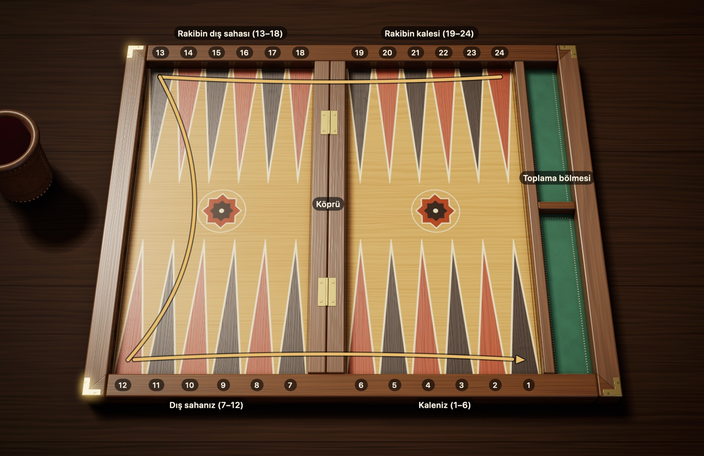
Şekil 2.1Tavla tahtası: 24 hane, dört bölge ve köprü. Siz alttasınız. Altın ok, pullarınızın 24. haneden 1. haneye uzanan yolunu gösterir; rakibiniz aynı yolu ters yönde gider.
Bölgeler. Tahtayı dört çeyreğe bölünmüş bir saha gibi düşünün; her çeyrekte altı hane vardır. Önünüzdeki iki çeyrek sizin, karşınızdaki iki çeyrek rakibinizin tarafıdır:
Kaleniz (1–6): Yolculuğun bittiği yer. Pullar buraya ulaştıktan sonra tahtadan çıkarılır. Şekil 2.1'de sağ altta.
Dış sahanız (7–12): Kaleye girmeden önceki son durak. Sol altta.
Rakibin dış sahası (13–18): Yolun ortası. Sol üstte.
Rakibin kalesi (19–24): Yolculuğun başladığı yer. Sağ üstte.
Köprü. Tahtanın ortasındaki yükseltiye köprü adı verilir. İki işi vardır: tahtanın sol ve sağ yarısını birbirinden ayırır, bir de kırılan pulların bekleme yeridir. Hane saymaya etkisi yoktur; 7'den 6'ya geçen pul, aradan köprü geçse de yalnızca bir adım atmış olur.
Numaraların mantığı. Numaralar herkesin kendi kalesinden başlar. Bu yüzden her üçgenin iki adı vardır: sizin 1 dediğiniz haneye rakibiniz 24 der. Karışıklık olmasın diye bu kitaptaki tüm numaralar sizin gözünüzden yazılmıştır.
Gidiş yönü. Pullarınız her zaman numarası küçülen yönde yürür. Sağ üstteki 24'ten yola çıkan bir pul, önce üst kenar boyunca sola gider, sol kenarda aşağı döner, ardından alt kenar boyunca sağa ilerleyip kalenize ulaşır. Rakibin pulları aynı yolu tersinden yürür; iki taraf bu yüzden yolda karşı karşıya gelir.
Aynalı tahta. Bazı oyuncular kaleyi solda kurmayı sever. O zaman bütün tahta aynalanmış olur ve pullar saat yönünde döner. Kurallar açısından iki kurulum arasında hiçbir fark yoktur.
2.2 Başlangıç dizilişi
Her oyun aynı başlangıç konumundan açılır. Kendi 15 pulunuzu dört noktaya, en uzaktan en yakına doğru şöyle yerleştirin:
24. hane, 2 pul. Rakibin kalesinin köşesi. Buradaki ikili, eve en uzak pullarınızdır.
13. hane, 5 pul. Sol üst köşe; yolun tam ortası.
8. hane, 3 pul. Kendi dış sahanızda, kaleye iki adım kala.
6. hane, 5 pul. Kalenizin köprüye bakan ilk hanesi.
2 + 5 + 3 + 5 ile 15'e ulaşırsınız. Rakibiniz de aynı düzeni kendi tarafından kurduğu için onun pulları sizin 1, 12, 17 ve 19 numaralı hanelerinize düşer. Tahtayı ortadan katlasanız iki taraf tam üst üste gelirdi.
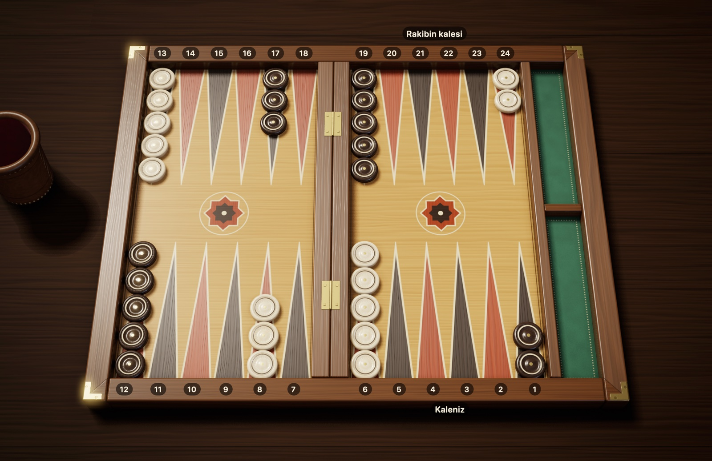
Şekil 2.2Başlangıç dizilişi: her oyuncuda 15 pul. Sizin pullarınız krem, kaleniz sağ altta; rakibin pulları koyu kahve, kalesi sağ üstte. Sizin 24'te 2, 13'te 5, 8'de 3, 6'da 5 pulunuz var.
Kolay hatırlama yolu: "2-5-3-5" diye ezberleyin ve pulları en gerideki haneden başlayarak dizin. Pullarınızın üçte biri (5 pul) zaten kalenizde, diğerleri yolun farklı noktalarındadır. Oyunun büyük kısmı, geride kalan pulları güvenle eve getirmekle geçer.
2.3 Oyuna başlama
İlk hamleyi kimin yapacağını zar belirler. Her oyuncu tek bir zar atar ve büyük sayıyı atan başlar. Sayılar eşit gelirse sonuç sayılmaz; farklı sayı çıkana dek iki taraf da yeniden atar.
Kazanan oyuncunun ilk hamlesiyle ilgili iki ayrı gelenek vardır:
Uluslararası kural: Kimse yeniden zar atmaz. Masadaki iki zar, yani sizin ve rakibinizin attığı, birlikte sizin ilk hamleniz olur. Siz 5, rakip 3 attıysa 5-3 oynarsınız. Başlama zarları eşit gelemeyeceği için bu ilk hamle hiçbir zaman çift olmaz.
Yaygın Türk kuralı: Kazanan iki zarı birden eline alır ve yeni bir atış yapar. Bu atış herhangi bir sayı olabilir, çift de dahil.
Bundan sonra oyuncular her sırada iki zar atarak dönüşümlü oynar.
Yeni oyun. Uluslararası kurallarda her oyun, başlama zarıyla sıfırdan açılır. Türk tavlasında ise açılışı genellikle son oyunun galibi yapar.
Zar atma adabı. Masada oynarken birkaç teamül vardır. Zarlar genellikle kutuda sallanıp tahtanın sağ yarısına atılır. Eğri düşen, bir pulun üstünde kalan ya da tahtanın dışına kaçan zarla oynanmaz; atış iki zarla birlikte tekrarlanır. Sıra, rakip zarlarını eline aldığı anda size geçer; ondan önce attığınız zar sayılmaz. Burada anlatılan geleneksel masa adabıdır; turnuva yönetmelikleri saat, zar kutusu ya da dört zar kullanımına göre bu ayrıntılarda farklılık gösterebilir.
2.4 Türk ve uluslararası kurallar
İki sette de hane sayımı, zar kuralları ve kapı mantığı aynıdır. Farklar başlangıçta, puanlamada ve iki oyun içi ayrıntıda toplanır: yaygın Türk tavlasında kendi kalenizde kırıp kaçmak ve toplama sırasında pul çıkarmak mümkünken pip harcamak yasak sayılır. Aşağıdaki tablo yaygın kurallara göredir; masadan masaya küçük farklar olabilir.
Pul ve Zar'da iki kural setiyle de oynayabilirsiniz. Bu kitapta iki set arasında fark olan yerlerde her iki kural da ayrıca belirtilmiştir; oyuna başlamadan hangisiyle oynayacağınızı seçmeniz yeterlidir.
Tablo 2.1 Türk tavlası ve uluslararası kurallar
Konu
Uluslararası (vidolu)
Yaygın Türk tavlası
İlk hamle
Başlama zarlarıyla oynanır, çift olamaz
Yüksek atan iki zarı yeniden atar, çift gelebilir
Sonraki oyunu kim başlar
Her oyunda başlama zarı atılır
Önceki oyunu kazanan başlar
Kendi kalenizde kırıp kaçmak
Serbest
Yasak sayılır (Pul ve Zar'da yeni maçta seçilir; öntanımlı olarak serbest)
Toplamada pul çıkarmak mümkünken pulu ilerletmek (sallamak)
Serbest
Yasak sayılır (Pul ve Zar'da yeni maçta seçilir; öntanımlı olarak serbest)
Katmerli mars
Var (× 3)
Yok, mars sayılır (× 2)
Vido küpü
Standart, turnuvalarda zorunlu
Hiç yok
Crawford kuralı
Maçlarda standart
Yok
2.5 Pul ve Zar'da oyun ekranı
Maç başladığında tahtanın çevresinde, oyunun durumunu gösteren alanlar belirir. Şekil 2.3 sizin hamle sıranızdan alınmıştır; numaraların karşılığı altında.
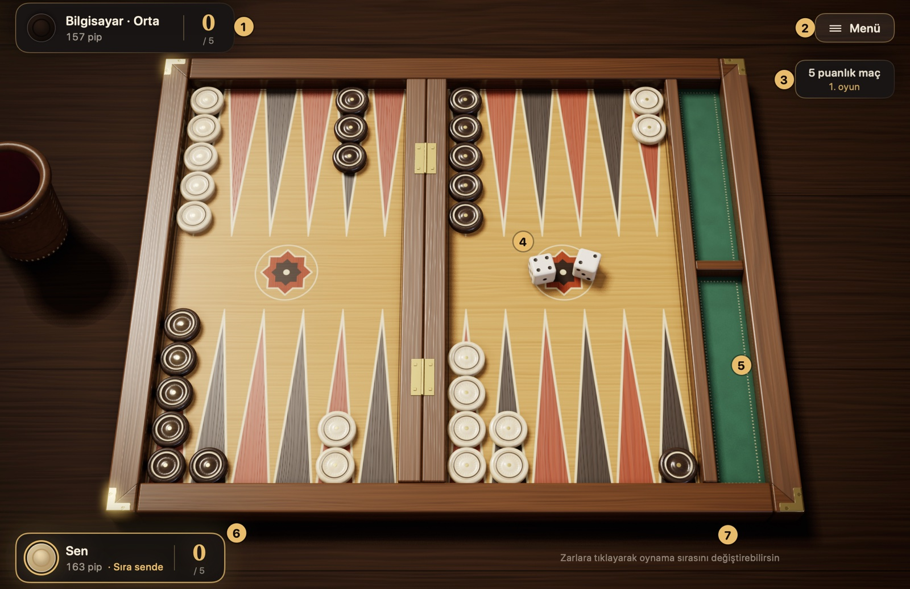
Şekil 2.3Pul ve Zar'ın oyun ekranı. Numaralı öğelerin karşılığı aşağıdaki listede.
Rakip kartı: Rakibinizi ("Bilgisayar · Orta" gibi, zorluk düzeyiyle), pip sayısını ve maçtaki puanını gösterir. Bilgisayar düşünürken "Düşünüyor…" yazar.
Menü: Oyunu duraklatır. Açılan kartta devam etmek, ayarlar, "Nasıl Oynanır" kartı, hamle geçmişi, maçlar, pes etmek ve maçtan çıkmak vardır. Esc tuşu da aynı işi görür.
Maç bilgisi: Maçın kaç puana kadar oynandığını (oturumda "Oturum" yazar) ve kaçıncı oyunda olduğunuzu gösterir. Uluslararası kurallarda altında küp göstergesi durur.
Zarlar: Sizin zarlarınız tahtanın sağ yarısına, bilgisayarınkiler sol yarısına düşer.
Toplama bölmesi: Tahtanın sağındaki yeşil bölme. Toplanan pullarınız alt yarısına, rakibinkiler üst yarısına dizilir.
Sizin kartınız: Pip sayınızı, maç puanınızı ve sıra sizdeyse "Sıra sende" uyarısını gösterir.
İpucu satırı: O an ne yapabileceğinizi kısaca söyler. Geçersiz bir hamle denediğinizde nedenini de burada okursunuz, örneğin "Bu pul bu zarla oynanamaz".
İsteğe bağlı düğmeler. Ayarlar'da açarsanız sağ altta üç düğme daha belirir: "İpucu" Usta motorunun önerdiği hamleyi tahtada işaretler (⌘I); "Geri Al" o sırada oynadığınız adımları geri alır (⌘Z); "Tamam" ise otomatik onay kapalıyken elinizi bitirir ve sırayı rakibe verir (Return). Ayrıntısı 5.3'te.
Oyuna başlamadan. Yeni maç panelinde zorluk düzeyini, kural setini (Türk tavlası ya da uluslararası), maç uzunluğunu ya da uluslararası kurallarda oturumu ve pul renginizi seçersiniz. Bu seçimler maç boyunca geçerlidir; ayrıntısı 5.1'de.
Bir sıra nasıl geçer? Sıra size gelince zarlar kendiliğinden atılır ve deri kupadan tahtaya dökülür; uluslararası kurallarda vido çekebileceğiniz elde uygulama bekler, zarı "Zar At" düğmesiyle ya da Boşluk tuşuyla siz atarsınız. Pulunuzu sürükleyip bırakarak ya da önce pula, sonra gideceği haneye tıklayarak oynarsınız; oynanabilir pullar parlar, gidebilecekleri haneler halkayla gösterilir. Son adımı oynayınca eliniz biter ve sıra rakibe geçer. Zarı her el kendiniz atmak, eli "Tamam" ile onaylamak ya da adımları geri almak isterseniz bunları Ayarlar'dan seçersiniz; ayrıntısı 5.3'te. Kurallara aykırı bir hamleyi uygulama zaten kabul etmez.
Pip sayısı ne anlatır? Kartlardaki pip, o oyuncunun bütün pullarını eve getirip toplamak için daha kaç hane yürümesi gerektiğidir. Sayısı küçük olan yarışta öndedir. Ayrıntısı 4.2'de.
3. Bölüm
Oyunun kuralları
Bu bölüm oyunun bütün kurallarını sırayla anlatır: pulların hareketi, çift zar, mecburi hamle, kırma ve kırık pulun girişi, toplama, puanlama ve vido küpü.
3.1 Pulların hareketi
Sırası gelen oyuncu iki zar atar ve zarlardaki sayılar kadar pul ilerletir. Bu bölüm, bir zarı nasıl oynayacağınızı adım adım anlatır.
Zarı okumak
Zarlar pulların kaç hane ilerleyeceğini söyler. 4 gelen zar, bir pulun 4 hane ilerlemesi demektir. Sayarken pulun durduğu haneyi saymazsınız; bir sonraki haneden başlarsınız. 13. hanedeki pul 4 ile 12, 11, 10, 9 diye sayarak 9. haneye gider.
Tavlada geri vites yoktur: bir pul yalnızca numarası daha küçük hanelere doğru, yani kalesine yaklaşarak yürüyebilir.
İki zar, iki ayrı hamle
Elinizdeki iki zarı iki ayrı hak gibi düşünün. 5-3 geldiğinde bu hakları dilediğiniz gibi kullanırsınız:
5'i bir pulla, 3'ü başka bir pulla oynayabilirsiniz.
İkisini de aynı pula verip onu toplam 8 hane taşıyabilirsiniz; önce 3'ü de oynayabilirsiniz, önce 5'i de.
Tek pulla iki zar oynadığınızda pul aslında iki ayrı sıçrama yapar ve ilk sıçramanın bittiği haneye bir an için basar. O ara hane de pulun basabileceği bir yer olmalıdır. İki zarın toplamını tek seferde sayıp aradaki haneyi atlamak mümkün değildir.
Şekil 3.15-3 zarını oynamanın iki yolu. Yeşil oklar, 1. yol: 8→3 (5) ve 6→3 (3); iki ayrı pul 3. hanede kapı kurar. Mavi oklar, 2. yol: 24→21 (3), sonra 21→16 (5); aynı pul toplam 8 hane gider. Aynı pul önce 5 oynayamaz: kırmızı çerçeveli 19. hane rakibin kapısı, ara durak olamaz.
Tersi de geçerlidir: tek bir zarı parçalara ayıramazsınız. Bir 5'i 3 ve 2 diye iki farklı pula paylaştırmak kurala aykırıdır; her zar bütün olarak tek bir pula aittir.
Pul nereye konabilir?
Bir pulu ilerlettiğinizde varış hanesinin durumu önemlidir. Dört ihtimal vardır:
Tablo 3.1 Varış hanesine göre pul konabilir mi?
Varış hanesinde ne var?
Pul konabilir mi?
Hiç pul yok (boş hane)
Evet
Sizin bir ya da daha fazla pulunuz
Evet, sayı sınırı yok
Rakibin tek pulu (açık)
Evet, rakibin pulu kırılır
Rakibin iki ya da daha fazla pulu (kapı)
Hayır
Şekil 3.2Açık hane ve kapı. 11'deki pul için: 10. hane boş, konabilir. 8'de kendi pullarınız var, üstüne istediğiniz kadar pul koyabilirsiniz. 7'de rakibin tek pulu (açık) var; konabilirsiniz ve o pul kırılır. Kırmızı çerçeveli 9'da rakibin iki pulu (kapı) var: kesik kırmızı ok, oraya konamayacağınızı gösterir.
İki ya da daha fazla pulun birlikte durduğu haneye kapı diyoruz. Kapıyı bir duvar gibi düşünün: rakip o haneye ne inebilir ne de iki zarlık bir hamlede ona ara durak olarak basabilir. Kendi kapılarınızı akıllıca kurmak, rakibin yolunu daraltmanın en etkili yoludur.
3.2 Çift zar
İki zar aynı sayıyı gösterdiğinde (1-1'den 6-6'ya kadar) elinize bir ikramiye geçer: o sayıyı iki değil, tam dört hamle olarak kullanırsınız. 5-5 gelen oyuncu dört ayrı 5 hamlesi yapar ve toplamda 20 hane ilerler. Bu atışlara çift denir.
Dört hamleyi dilediğiniz gibi dağıtabilirsiniz: dört ayrı pula birer kez, iki pula ikişer kez ya da tek bir pula dört kez. Tek pulla birden fazla adım atıyorsanız, uğradığı her ara durak açık olmalıdır.
Şekil 3.3Çift zar: 4-4 ile dört hamle. 24'teki iki pulu 20'ye taşıyın (4 + 4), 13'ten iki pulu 9'a indirin (4 + 4). Dört hamlenin her biri 4 hanedir; istediğiniz pullara dağıtabilirsiniz.
3.3 Mecburi hamle
Zar attıktan sonra "bu eli geçiyorum" deme hakkınız yoktur. Zarların izin verdiği bir hamle varsa yapmak zorundasınız. Hangi zarı ne kadar kullanacağınızı şu sorularla bulabilirsiniz:
İki zarı da kullanan bir hamle var mı? Varsa onu yapmalısınız. Aklınıza gelen ilk hamle bir zarı boşa çıkarıyorsa, iki zarın da sığdığı başka bir yol arayın.
Yalnızca bir zar mı oynanabiliyor? O zaman oynanabilen zarı kullanırsınız, öteki yanar.
Zarlar tek tek oynanabiliyor ama ikisi birden sığmıyor mu? Bu durumda seçim size kalmaz; büyük sayılı zarı kullanırsınız. Şekil 3.4 bunu gösteriyor.
Hiçbir zar oynanamıyor mu? Eliniz boşa gider ve zar sırası rakibe geçer.
Çift mi geldi? Dört hamlenin hepsi sığmıyorsa, yasal olarak oynanabilecek en fazla sayıda hamleyi yapmak zorundasınız; hamle sırası bu sayıyı etkiliyorsa daha çok hamle oynatan sırayı seçmelisiniz. Kalanlar yanar.
Şekil 3.4Büyük zar kuralı: 6-5. 14'teki pul 6 ile 8'e (yeşil ok) ya da 5 ile 9'a (kesik ok) gidebilir, ama ikisini birden oynayamaz: iki yolun ikinci adımı da rakibin kapısı olan 3. haneye (kırmızı çerçeve) çıkar. Kalenin dibindeki öbür pullarınız hiçbir zarı oynayamaz. Zarlar ayrı ayrı oynanabiliyor ama birlikte oynanamıyorsa büyük zar oynanır: 14→8.
Bu kuralların sonucunda bazen oynayabileceğiniz tek bir hamle kalır; buna mecburi hamle denir. Dijital tavlada bu kuralları uygulama kendisi denetler ve kurala aykırı hamleye izin vermez; gerçek tahtada ise dikkat etmek size kalır.
3.4 Açık pul ve kırma
Tavlayı heyecanlı kılan şey kırmadır. Önce iki durumu birbirinden ayırmak gerekiyor:
Açık: Bir hanede yalnız başına kalmış pul. Korumasızdır; rakip üstüne gelirse yerinden olur.
Kapı: Aynı renkten en az iki pulun paylaştığı hane. Burada duran pullara dokunulamaz.
Rakibin açığının durduğu haneye pulunuzu indirdiğinizde o açığı kırmış olursunuz. Kırılan pul tahtadan alınıp ortadaki köprüye oturtulur. Rakip için bu ciddi bir geri adımdır: pul yolculuğa en baştan başlamak zorundadır ve o pul tahtaya dönene kadar rakibin elleri bağlıdır.
Şekil 3.5Kırma: 13→9 ile açık pul kırılıyor. 4 ile 13→9: rakibin tek pulunun üstüne konarak onu kırarsınız; kırılan pul köprüye gider (kesik ok). 2 ile 11→9: ikinci pulu da getirip 9'da kapı kurarsınız; artık siz kırılamazsınız.
Bilmeniz gerekenler:
Kırmak zorunlu değildir. Bir açığı kırabilecekken başka bir hamle yapmayı seçebilirsiniz.
Kırdıktan sonra aynı pulla yolunuza devam edebilirsiniz. Örneğin 4-2 ile bir pulu 4 hane götürüp kırabilir, sonra aynı pulu 2 hane daha ilerletebilirsiniz. Buna "vur kaç" denir. Uluslararası kurallarda tahtanın her yerinde serbesttir; yaygın Türk tavlasında ve Yunan portes'inde ise kendi kalenizde kırdıktan sonra aynı pulla kaçmak yasaktır. Pul ve Zar'da Türk kurallarıyla oynarken bu yasağı yeni maç panelindeki "Kırıp kaçmak yasak" seçeneğiyle açabilirsiniz; öntanımlı olarak kapalıdır.
Aynı hamlede birden fazla açık kırabilirsiniz; örneğin bir pul iki zarın ara durağında bir açığı, varışında başka bir açığı kırabilir.
Aynı kurallar sizin için de geçerlidir. Açık bıraktığınız pul, rakibin zarı tutarsa kırılır. Bu yüzden mümkün olduğunda pullarınızı ikili tutmaya çalışın.
3.5 Kırık pulu oyuna sokmak
Kendi pulunuz kırıldığında, sıranız geldiğinde gündeminizde tek madde vardır: o pulu tahtaya geri indirmek. Köprüde bekleyen pulunuz olduğu sürece diğer pullarınız donmuş sayılır.
Nereden girer? Kırık pul yolculuğa baştan, yani rakibin kalesinden başlar. Girdiği haneyi zar belirler. Rakibin kalesini uçtan köprüye doğru 1'den 6'ya sayın: 1 atarsanız tahtanın köşesindeki haneye, 6 atarsanız köprüye bitişik haneye girersiniz. Sizin numaralandırmanızla:
Tablo 3.2 Kırık pulun zara göre girdiği hane
Zar
Girilen hane
1
24
2
23
3
22
4
21
5
20
6
19
Zarın gösterdiği hanede hiç pul olmayabilir, sizin pullarınız olabilir ya da rakibin tek bir pulu durabilir. Üç durumda da girersiniz; sonuncusunda girerken o pulu kırmış olursunuz. Yalnızca rakibin kapısı olan hane size kapalıdır.
Şekil 3.6Kırık pulu oyuna sokmak: 5-2. Köprüdeki pulunuz rakibin kalesine girer: 1 ile 24'e, 2 ile 23'e … 6 ile 19'a. 5 ile giremezsiniz: 20. hanede rakibin kapısı var (kırmızı çerçeve). 2 ile boş olan 23. haneye (yeşil çerçeve) girersiniz. Girdikten sonra 5'i başka bir pulla ya da giren pulla oynarsınız.
Adım adım giriş:
Zarları atın ve her zarın rakibin kalesinde hangi haneye denk geldiğine bakın.
Denk gelen hanelerden en az biri size açıksa pulunuzu oraya koyun.
Giriş bir zarı kullanır. Öteki zar serbest kalır; onu istediğiniz pulla, isterseniz yeni giren pulla oynarsınız.
Köprüde iki pulunuz varsa iki zar da girişlere gider. Yalnızca biri girebiliyorsa onu indirirsiniz; ikinci pul köprüde beklediği için o el başka hamle yapamazsınız.
Giriş tek zarla yapılır. Diyelim ki 5-2 attınız; 20 ve 23 rakibin kapısı, 18. hane ise boş. İki zarı birleştirip 7 hane sayarak doğrudan 18'e inemezsiniz. Pul önce tek bir zarla rakibin kalesindeki açık bir haneye girmek zorundadır; burada ikisi de kapalı olduğu için giriş yoktur.
Gele
İki zarın gösterdiği hanelerin ikisinde de rakibin kapısı varsa köprüdeki pulunuz o el dışarıda kalır. Bu talihsiz atışa gele denir. Köprüde pul varken başka pul oynanamadığı için eliniz boşa gider; bir sonraki sıranızda şansınızı yeniden denersiniz.
Tatil
En kötü ihtimal, rakibin kalesindeki altı hanenin altısının da kapı olmasıdır. Bu durumda zarlar ne gelirse gelsin giriş hanesi bulunmaz; buna tatil denir. Rakip kapılarından birini bozana kadar sıranız her seferinde hamlesiz geçer; masada zar atmaya bile gerek yoktur, sıra doğrudan rakibe geçer. Pul ve Zar'da da böyledir: zar atılmaz, ekranda "Tatil" yazar ve sıra doğrudan rakibe geçer.
Şekil 3.7Tatil: rakibin kalesi tamamen kapalı. Köprüdeki pulunuz 19–24 arasındaki açık bir haneye girebilirdi, ama altı hanenin hepsi kapı (kırmızı çerçeveler). Buna tatil denir: rakip bir kapıyı açana kadar sıranız zar atılmadan geçer.
3.6 Toplama
Yarışın son düzlüğü pulları tahtadan çıkarmaktır; buna toplama denir. Bunun bir ön koşulu var: tahtadaki pullarınızın tamamı kalenizde, yani 1–6 arasındaki hanelerde olmalı. Tek bir pulunuz bile dışarıdaysa ya da köprüde bekliyorsa toplamaya başlayamazsınız.
Temel kural
Kural basittir: zarın sayısı, pul alacağınız haneyi gösterir. 6 gelirse 6. haneden, 2 gelirse 2. haneden bir pulu kaldırıp tahtanın kenarındaki boşluğa koyarsınız. Çıkan pul oyundan tamamen ayrılmıştır.
Şekil 3.8Toplama: 6-4 ile iki pul. 6 ile 6. haneden, 4 ile 4. haneden birer pul alıp sağdaki toplama bölmesine koyarsınız. Toplama ancak 15 pulun hepsi kalenizdeyken başlar.
Zarın hanesinde pul yoksa
Bazen zarın gösterdiği hane boştur. O zaman şu iki soruyu sırayla sorun:
Daha yüksek numaralı bir hanede pulum var mı? Varsa o zarla daha aşağıdaki bir haneden pul toplayamazsınız; zarı, genellikle o yüksek hanedeki bir pulu ilerleterek oynarsınız.
Daha yüksekte hiç pulum yok mu? O zaman pulunuzun bulunduğu en yüksek haneden bir pul toplarsınız. Örneğin en uzaktaki pulunuz 4'teyse, 6 da 5 de o pulu toplar.
Şekil 3.9Toplama: daha yüksekte pul varsa ilerletilir. 5 için: 5. hane boş ama daha yüksek 6. hanede pul var; 5 ile 3'ten ya da 1'den toplayamazsınız. 5'i 6'daki bir pulu ilerleterek oynarsınız (6→1), 1 ile de 1. haneden bir pul toplarsınız. Başka bir yol: önce 1 ile 6→5, sonra 5 ile o pulu 5. haneden toplamak. Toplama bölmesinde daha önce toplanan 10 pul duruyor.Şekil 3.10Toplama: en yüksek haneden. 6 ve 5 numaralı hanelerde ya da daha yukarıda pulunuz kalmadı. Bu durumda iki zarla da en yüksek dolu haneden, yani 4'ten birer pul toplarsınız.
Toplamak zorunda değilsiniz
Kurallara uygun başka bir hamleniz varsa pul çıkarmak zorunda değilsiniz. Pulları kale içinde ileri kaydırıp toplamayı sonraya bırakmaya sallamak denir. Rakibe kırılabilecek bir açık vermemek için bu bazen en akıllıca seçimdir. Aynı pulu bir zarla kaydırıp öbür zarla tahtadan çıkarmak da serbesttir. Bu serbestlik uluslararası kurala aittir; yaygın Türk tavlasında pul çıkarmak mümkünken küçük zarla pulu ilerletip pip harcamak yasak sayılır. Pul ve Zar'da Türk kurallarıyla oynarken bu yasağı yeni maç panelindeki "Sallamak yasak" seçeneğiyle açabilirsiniz; öntanımlı olarak kapalıdır.
Toplarken kırılırsanız
Rakibin sizin kalenizde bekleyen bir pulu varsa, toplama sırasında bıraktığınız açık kırılabilir. O zaman toplama durur: kırılan pul önce rakibin kalesinden oyuna girmeli, tahtayı dolaşıp kalenize dönmelidir. Tahtada kalan bütün pullarınız yeniden kalenizde toplandığında kaldığınız yerden devam edersiniz.
3.7 Oyunun sonu ve puanlar
Pullarının hepsini ilk çıkaran taraf oyunu alır. Kazancın büyüklüğü ise bitiş anında rakibinizin ne kadar geride kaldığına bağlıdır. Oyun bittiğinde rakibin pullarına bakın; aşağıdaki üç durumdan biri geçerli olacaktır:
Tablo 3.3 Oyunun sonucu ve puanlar
Sonuç
Rakibin durumu
Uluslararası, vidosuz
Uluslararası, vidolu
Türk tavlası
Normal oyun
En az bir pul toplamış
1
Küp değeri × 1
1
Mars
Hiç pul toplamamış
2
Küp değeri × 2
2
Katmerli mars
Hiç pul toplamamış ve köprüde ya da sizin kalenizde hâlâ pulu var
3
Küp değeri × 3
2 (mars sayılır)
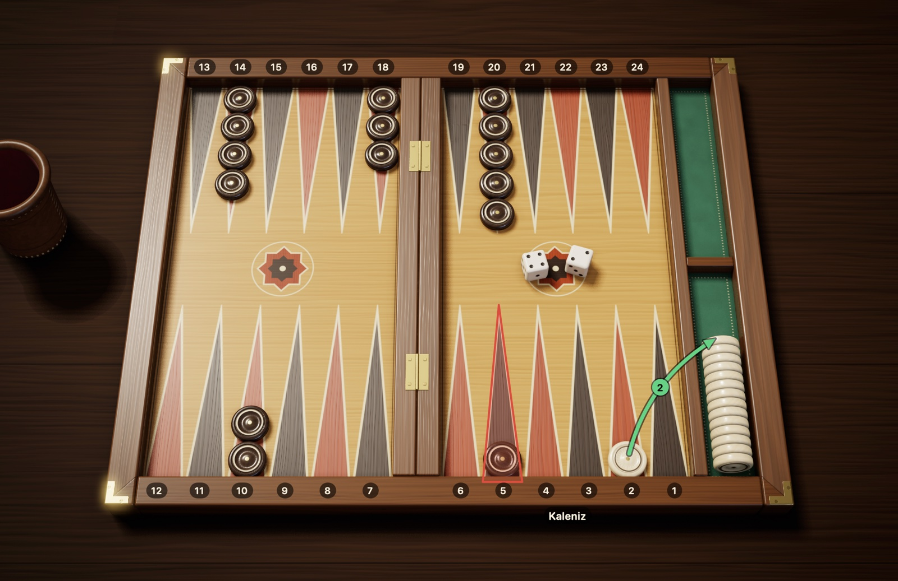
Şekil 3.11Katmerli mars: rakip sıfırda ve kalenizde pulu var. 2 ile son pulunuzu topladınız ve oyunu kazandınız. Rakip hiç pul toplayamadı: bu tek başına mars (2 puan) demektir. Ayrıca kırmızı çerçeveli 5. hanede, yani sizin kalenizde hâlâ pulu var: katmerli mars (3 puan).
Örnekler:
Siz son pulunuzu topladığınızda rakip 4 pul toplamışsa normal oyun kazanırsınız: 1 puan.
Rakip tek bir pul bile toplayamadıysa ama köprüde ve sizin kalenizde pulu kalmamışsa mars yaparsınız: 2 puan.
Rakip hiç pul toplayamadıysa ve bir pulu hâlâ köprüde ya da sizin kalenizdeyse katmerli mars yaparsınız: 3 puan.
Vido küpü 8'deyken mars yapan oyuncu 8 × 2 = 16 puan alır.
Türk tavlasında katmerli mars ayrı bir sonuç değildir; o durum da mars sayılır ve 2 puan getirir. Hangi kural setiyle oynadığınızı oyundan önce netleştirin.
Maç puanı. Tavla çoğunlukla tek oyun değil, belirli bir puana kadar oynanır; turnuvalarda bu genellikle 5, 7 ya da 11 puandır. Her oyunun sonunda kazananın puanı hanesine yazılır; vidolu oynanıyorsa puan küp değeriyle çarpılır. Hedef puana ilk ulaşan maçı kazanır. Bu yüzden mars yapmak ya da marstan kaçmak maçın sonucunu değiştirebilir.
3.8 Vido küpü
Vido küpü, üzerinde sayılar olan ama hiç atılmayan bir küptür. Yüzlerinde 2, 4, 8, 16, 32 ve 64 yazar ve yalnızca oyunun o anki değerini gösterir. Türkiye'deki mahalle tavlasında pek görülmez; buna karşılık uluslararası turnuvaların ve çevrimiçi maçların vazgeçilmezidir. Pul ve Zar'da vido küpü de vardır; oyunun başında uluslararası kural setini seçtiğinizde kullanılır; vido çekmek ve teklife yanıt vermek 5.4'te anlatılıyor. Vidosuz oynayacaksanız bu bölümü atlayabilirsiniz.
Küpün yeri ve anlamı
Oyun başlarken küp iki oyuncunun ortasında durur ve üst yüzünde 64 okunur. Küpte 1 yazmadığı için 64 burada "henüz katlanmadı, oyun 1 puan" anlamına gelir. Küp ortadayken ilk teklifi ikiniz de yapabilirsiniz. Bir teklif kabul edildikten sonra ise küpün kimin önünde durduğu, sıradaki teklif hakkının kimde olduğunu gösterir. Pul ve Zar'da küp, sağ üstteki maç bilgisinin altında gösterilir: başta "1 Küp ortada" yazar; bir vido alındıktan sonra küpün değeriyle "Küp sende" ya da "Küp rakipte" okunur.
Vido çekmek adım adım
Ne zaman? Teklif yalnızca kendi sıranızda ve zarlara dokunmadan önce yapılabilir. Zar atıldıktan sonra o elin fırsatı geçmiştir.
Nasıl? Durumunuzun iyi olduğunu düşünüyorsanız küpü bir sonraki değere (ilk seferde 2'ye) çevirip rakibe uzatır ve "vido" dersiniz. Anlamı şudur: "Bu oyunu iki katına oynayalım mı?"
Rakip ne yapabilir?
Alır: Küpü, katlanmış değer (ilk vidoda 2) yukarı bakacak şekilde kendi tarafına alır; oyun kaldığı konumdan, artık iki kat değerle sürer.
Pas der: Oyunu o anda teslim eder. Kaybettiği puan, küpün teklif yapılmadan önceki değeridir; ilk teklifte bu 1 puandır.
Sonraki teklif kimin? Küp, teklifi kabul eden oyuncuya geçer ve bir sonraki katlama hakkı yalnızca onundur. Bu yüzden teklifler hep karşılıklı sırayla gider; aynı oyuncu arka arkaya iki kez katlayamaz.
Örnek
Diyelim ki oyunun başında rakibiniz vido çekti ve siz aldınız; küp 2'de, sizin önünüzde. Birkaç el sonra oyun sizin lehinize dönünce küpü 4'e çevirip rakibe uzatıyorsunuz. Rakip pas derse oyunu kazanır, 2 puan alırsınız. Alırsa küp 4'te onun önüne geçer ve oyunun sonunda kazanılan puan Tablo 3.4'ün "4" satırından okunur.
Tablo 3.4 Küp değerine göre kazanılan puan
Küp
Normal oyun
Mars
Katmerli mars
Ortada (1)
1
2
3
2
2
4
6
4
4
8
12
8
8
16
24
Bilmeniz gerekenler:
Katlamanın tavanı yoktur; 64'ten sonra da değer 128, 256 diye ikiye katlanmayı sürdürür. Yine de bu kadar yüksek değerlere çok ender çıkılır.
Vido hakkı sizdeyse, köprüde bekleyen bir pulunuzun olması teklif yapmanıza engel değildir. Pul ve Zar'da tek istisna tatildir: rakibin kalesi tamamen kapalıyken sıra zar atılmadan geçer ve o elde vido da çekilmez.
Vido çekip çekmemek, kabul edip etmemek oyunun en önemli beceri noktalarındandır; ölçüler bir sonraki başlıkta.
Vido kararları
Küpü doğru kullanmak tavlanın en ince becerilerinden biridir. Aşağıdakiler kesin kurallar değil, başlangıç için sağlam ölçülerdir.
Kabul etmek için: Teklif aldığınızda yaklaşık olarak kendinize şunu sorun: "Bu oyunu dört kez oynasam en az birini kazanır mıyım?" Kazanma şansınız dörtte bir civarındaysa ya da daha yüksekse almak genellikle doğrudur. Çünkü pas deyince kaybınız kesinleşir; aldığınızda ise oyunu çevirme ve küpü sonra kendi lehinize kullanma hakkınız olur. Bu %25 ölçüsü, marsın ve yeniden katlamanın hesaba katılmadığı en basit modelden gelir: küpü elinizde tutmanın değeri eşiği biraz aşağı çeker, mars riski onu yükseltir, maç skoru ise iki yöne de oynatabilir.
Teklif etmek için: Durumunuz belirgin biçimde iyiyse ama oyun henüz bitmemişse vido çekmenin zamanı gelmiştir. Üç hatadan kaçının:
Çok erken çekmek: Az bir üstünlükle çekilen vido, rakibe hem rahat bir kabul hem de küpün sahipliğini verir.
Çok geç çekmek: Durumunuz o kadar iyileşir ki rakip artık kabul etmez ve oyunu 1 puanla bırakır; oysa bir el önce çekseydiniz alacak, siz de iki katına oynayacaktınız. Buna "pazarı kaçırmak" denir.
Vido için fazla iyi konum: Konum, rakibin vidoyu kesinlikle reddedeceği kadar güçlü olabilir. Küpü kullanmadan oynamaya devam edip marstan beklediğiniz kazanç, rakibin pasıyla alacağınız 1 puandan yüksekse konum "vido için fazla iyi"dir. Bu ölçü Jacoby kuralının uygulandığı oturumlarda geçersizdir; orada vido çekilmemişse mars 1 puan saydığından küpü çevirmek gerekir. Maç oyununda da skor marsın değerini değiştirir.
Saf yarışta 8-9-12 kuralı. Temas bittiyse ve oyun yalnızca pip yarışıysa kararı pip sayısı verir. Farkı, önde olan oyuncunun pip sayısına bölerek yüzde olarak hesaplayın; siz gerideyseniz de rakibin, yani liderin sayısına bölün:
Tablo 3.5 Saf yarışta 8-9-12 kuralı
Pip farkı (liderin sayısına göre)
Karar
%8 önde
İlk vidoyu çekmeyi düşünün
%9 önde
Küp sizdeyse yeniden katlayın
%12'ye kadar geride
Teklif gelirse kabul edin
%12'den fazla geride
Pas deyin
Örnek: sizin pip sayınız 80, rakibinki 88 ise 8 pip öndesiniz; bu, liderin sayısı olan 80'in %10'u eder ve vido bölgesindesiniz. Kural ham pip sayısına dayandığı için, pullarınızı alçak hanelere yığdıysanız biraz daha temkinli olun. Kural, sıra sizdeyken, temas tamamen bittiğinde ve orta ya da uzun yarışlarda geçerlidir; oyun son birkaç pula indiğinde yüzde hesabı yerine pulların yerine bakmak, maç oynanıyorsa skoru ayrıca değerlendirmek gerekir.
Maç ve oturum kuralları
Crawford kuralı: Maçta oyunculardan biri hedef puana ilk kez bir puan uzaklığa geldiğinde (5 puanlık maçta 4 puana), hemen ardından gelen tek oyunda küp kullanılmaz; buna Crawford oyunu denir. O oyun bitince küp yeniden kullanıma girer ve maç sonuna kadar serbesttir. Kural maç boyunca yalnızca bir kez işler; daha sonra öteki oyuncu da aynı puana gelse yeni bir Crawford oyunu oynanmaz. Amaç, geride kalan oyuncunun her oyunu hemen katlayarak aradaki farkı tek oyunda kapatmasının önüne geçmektir. Kural, adını Amerikalı oyuncu John R. Crawford'dan alır.
İsteğe bağlı kurallar (oturumlarda görülür, maçlarda kullanılmaz):
Otomatik vido: Başlama zarları aynı gelirse küp kendiliğinden 2'ye çevrilir ve ortada kalır. Genellikle oyun başına bir kezle sınırlanır.
Beaver: Vido çekilen oyuncu kabul ederken küpü hemen bir kez daha katlayabilir ve küp yine onda kalır. Vidoyu çeken oyuncu beaver'ı alabilir ya da pas diyebilir; pas derse çektiği vidonun değerini kaybeder, ilk vidoda bu 2 puandır.
Raccoon: Beaver ile karşılaşan oyuncu, yani ilk vidoyu çeken taraf, değeri hemen bir kez daha katlayabilir. Küp yine vidoyu kabul eden oyuncuda kalır; karşı taraf ya yeni değeri kabul eder ya da oyunu o anki değerden bırakır. Beaver gibi yalnızca oturumlarda görülür.
Jacoby kuralı: Oyunda hiç vido çekilmediyse mars ve katmerli mars yalnızca 1 puan sayılır. Önde olan oyuncuyu mars peşinde koşmak yerine vido çekmeye teşvik eder.
4. Bölüm
Daha iyi oynamak
Kuralları öğrendikten sonra iyi oynamanın temelleri: örnek bir oyun, pip sayımı, açılış hamleleri, oyun planları, açık bırakmanın riski ve toplama stratejisi.
4.1 Örnek oyun: ilk beş el
Kuralları bir arada görmek için bir oyunun ilk beş elini adım adım izleyelim. Tahta başlangıç dizilişinde, uluslararası kurallarla oynuyoruz. Hane numaraları sizin açınızdan verilmiştir.
Başlama zarları. Siz 3, rakibiniz 1 atar. Yüksek atan sizsiniz; ilk hamlenizi bu 3-1 ile oynarsınız. 3 ile 8→5, 1 ile 6→5 oynayıp 5. hanede kapı kurarsınız. Bu, açılışta en çok önerilen hamlelerden biridir.
Rakip 6-4 atar. Arka pullarından birini koşturur: sizin 1. hanenizdeki pul 6 ile 7'ye, 4 ile 11'e gider. Pul 11'de tek başına kalır, yani açıktır.
Siz 4-2 atarsınız. 2 ile 13→11 oynayıp rakibin açığını kırarsınız; rakibin pulu köprüye gider. 4 ile 24→20 oynarsınız.
Rakip 5-5 atar. Köprüde pulu olduğu için önce onu sokmak zorundadır. 5 ile girmesi gereken hane sizin 5. haneniz, ama orada kapınız var. Dört zarın hepsi 5 olduğu için rakip gele atmış olur; bu elde hiçbir pul oynayamaz.
Siz 6-5 atarsınız. 24'te kalan pulunuzu 6 ile 18'e, 5 ile 13'e götürürsünüz. 18 boş olduğu için ara durak serbesttir; 13'te zaten pullarınız var.
Beş elin sonunda tahta Şekil 4.1'deki gibi görünür:
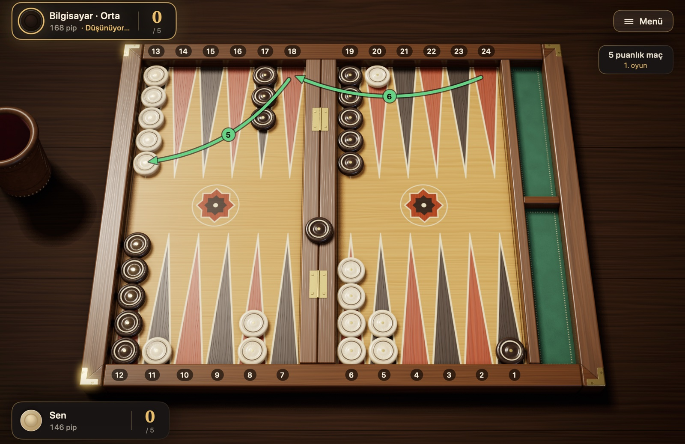
Şekil 4.1Örnek oyun: beşinci elden sonraki konum. Son el: 6-5 ile 24'teki pul önce 18'e, sonra 13'e koştu (yeşil oklar). Rakibin bir pulu köprüde bekliyor; 5. hanedeki kapınız girişini zorlaştırıyor. Açık pullarınız 20 ve 11'de. Oyuncu kartlarındaki pip sayıları: siz 146, rakip 168; sıra rakipte.
Bu beş elde hareket, kapı kurma, kırma, oyuna girme ve gele kurallarının hepsi kullanıldı. Oyun bu şekilde, iki taraf pullarını kalelerine taşıyıp toplayana kadar sürer.
4.2 Pip sayımı
Tavla bir yarış olduğu için, oyunun herhangi bir anında "kim eve daha yakın?" sorusu çok önemlidir. Bunun ölçüsü pip sayısıdır: bir oyuncunun bütün pullarını kaleye getirip tahtadan çıkarması için toplam kaç hane yürümesi gerektiği.
Nasıl hesaplanır? Her pulun uzaklığı, kendi numaralandırmanızdaki hane numarasıdır. 6. hanedeki pul 6 pip, 13. hanedeki pul 13 pip uzaktır. Köprüdeki pul en uzak konumdadır ve 25 sayılır. Bütün pulların uzaklıklarını toplarsınız.
Örneğin başlangıçta: 2 × 24 + 5 × 13 + 3 × 8 + 5 × 6 = 48 + 65 + 24 + 30 = 167 pip. İki oyuncu da oyuna 167 ile başlar. Her hamlede sayınız pulun gerçekten yürüdüğü kadar azalır (toplamada büyük zarla en yüksek haneden pul çıkardığınızda azalma zar değeri değil, pulun bulunduğu hane numarası kadardır); kırılan bir pul ise köprüye döndüğü için sahibinin sayısını birden artırır.
Pul ve Zar'da bunu hesaplamanız gerekmez. Oyuncu kartlarındaki pip sayısı her hamleden sonra kendiliğinden güncellenir. 4.1'deki örnek oyunda siz 146, rakip 168 pipte; yani yaklaşık üç zarlık bir üstünlüğünüz var.
Bu bilgi ne işe yarar?
Öndeyseniz temastan kaçınıp hızla eve dönmek genellikle iyi bir plan olur.
Gerideyseniz yalnızca yarışla kazanmanız zordur; rakibin pullarını kırmak ya da yolunu kesmek için fırsat kollarsınız.
Vidoyla oynuyorsanız, saf yarışta vido kararlarını pip farkı belirler. Hangi farkta ne yapılacağı, 3.8'deki "Vido kararları" başlığında anlatılıyor.
4.3 Açılış hamleleri
Oyunun ilk hamlesi her zaman aynı konumdan yapıldığı için, her zar için iyi oynanışlar bilgisayar analizleriyle büyük ölçüde belirlenmiştir. Tablo 4.1, uluslararası kurallarla ve maç skoru hesaba katılmadan oynanan oyunlar için yaygın kabul gören oynanışları verir; maçta skor bazı seçimleri değiştirebilir. Yazım şekli "nereden/nereye"dir: 8/5, 8. haneden 5. haneye demektir; (2) aynı hamlenin iki pulla yapıldığını gösterir.
Tablo 4.1 Uluslararası kurallarda açılış hamleleri
Zar
Önerilen oynanış
Makul alternatif
Ne amaçlanır
3-1
8/5 6/5
—
5. hanede kapı
4-2
8/4 6/4
—
4. hanede kapı
6-1
13/7 8/7
—
7. hanede kapı, kalenin önünü kapatmak
5-3
8/3 6/3
—
3. hanede kapı
6-5
24/13
—
Arka pullardan birini tek hamlede kurtarmak
6-4
24/14
24/18 13/9 ya da 8/2 6/2
Üç oynanış neredeyse eşit değerde
6-3
24/18 13/10
24/15
Hem geriden hem ortadan gelişmek
6-2
24/18 13/11
24/16
Hem geriden hem ortadan gelişmek
5-4
24/20 13/8
13/9 13/8
Geride çapa adayı, ortada yeni pul
5-2
13/8 24/22
13/8 13/11
Ortadan güvenli gelişim
5-1
13/8 24/23
13/8 6/5
Güvenli pul, arka pulları ayırmak
4-3
13/10 13/9
24/21 13/9 ya da 24/20 13/10
Kaleyi kurmak için yapı taşı getirmek
4-1
24/23 13/9
13/9 6/5
Arka pulları ayırmak, ortada yeni pul
3-2
24/21 13/11
13/11 13/10
Arka pulları ayırmak, ortada yeni pul
2-1
13/11 6/5
13/11 24/23
5. haneyi yoklamak ya da arka pulları ayırmak
Tablo 4.1'deki oynanışlar, Backgammon Galore sitesindeki bilgisayar analizlerine dayanır. "Makul alternatif" sütunundakiler de iyi oynanışlardır; analizlerde aralarındaki fark çok küçüktür ve oyun tarzınıza göre seçebilirsiniz. Güvenli oynamak isteyen yeni başlayanlar 2-1'de 13/11 24/23'ü, 6-4'te ise hiç açık bırakmayan 8/2 6/2'yi tercih edebilir. Karşılaştırma için: 24/14 ile bırakılan açık 36 zarın 11'iyle kırılır; 24/18 13/9 ile bırakılan iki açıktan en az biri ise 36 zarın 27'siyle.
Uluslararası kuralda ilk hamle hiç çift olmaz. Türk kuralıyla oynuyorsanız ilk zar çift de gelebilir; o zaman şu oynanışlar iyi bir başlangıçtır:
Tablo 4.2 Türk kuralında çift gelen ilk zar
Çift
Önerilen oynanış
6-6
24/18(2) 13/7(2)
5-5
13/3(2)
4-4
24/20(2) 13/9(2)
3-3
8/5(2) 6/3(2)
2-2
13/11(2) 6/4(2)
1-1
8/7(2) 6/5(2)
Bu tabloları ezberlemeniz gerekmez. Ama hepsinin ortak mantığını görmek öğreticidir: mümkünse kalenizde ya da önünde yeni kapı kurun, kuramazsanız arka pulları hareketlendirin ve pulları kolay kırılacak yerlerde tek bırakmayın.
4.4 Temel oyun planları
Tavla oyunlarının çoğu birkaç tanıdık plandan birine dönüşür. Hangisinin size uygun olduğunu pip farkı ve tahtadaki kapılar belirler. Oyun ilerledikçe bir plandan diğerine geçmek de normaldir.
Koşu oyunu: Pip sayısında öndeyseniz rakiple teması kesip bütün pullarınızı hızla eve taşırsınız. Temas bittiğinde oyun saf bir zar yarışına döner ve önde olan genellikle kazanır.
Tutma oyunu (çapa): Rakibin kalesinde iki pulla bir kapı tutarsınız. Bu "çapa" sizi kırılmaktan korur ve rakip eve dönerken açık verirse onu kırma şansı sağlar. Gerideyseniz en sağlam plandır.
Duvar oyunu: Yan yana kapılar kurarak rakibin arka pullarının önüne bir set çekersiniz. Altı kapı art arda olursa arkadaki pul hiçbir zarla geçemez; duvarı yavaşça kaleye doğru kaydırıp rakibi sıkıştırırsınız.
Saldırı: Rakibin kalenize giren pullarını tekrar tekrar kırıp kalenizi hızla kapatırsınız. Başarılı bir saldırı rakibi tatile sokar ve sık sık mars getirir; ama başarısız olursa geride kendi açıklarınızı bırakırsınız.
Arka oyun: Çok gerideyken rakibin kalesinde iki çapa tutup, rakip eve toplanırken bir açık vermesini beklersiniz. Kurtarma planıdır, bilerek seçilecek bir başlangıç değildir.
Bunlar mekanik kurallar değil, sezgilerdir. Zamanlama, kapılarınızın kalitesi, arka pulların durumu ve mars riski, pip farkının işaret ettiğinin tersini gerektirebilir: büyük pip üstünlüğüyle güçlü bir duvarı hemen bırakmak da, sırf geride olduğu için iyi giden bir saldırıyı sonlandırmak da hata olur.
4.5 Açık bırakmanın riski
Bazen bir pulu tek bırakmaktan kaçınamazsınız. O zaman soru şudur: nereye bırakırsam en az kırılır? Cevabı, açığın onu kırabilecek rakip puldan kaç hane uzakta olduğu belirler.
Şekil 4.2Açığın vurulma olasılığı, uzaklığa göre. 6 hane uzaktaki açık en tehlikede; 7 ve ötesinde risk birden düşer. Çubuklar, rakibin 36 olası zarından kaçının açığınızı kırdığını gösterir (arada kapı yoksa).
En tehlikeli uzaklık 6'dır. 6 hane uzaktaki açık 36 zarın 17'siyle, yani hemen hemen her iki atıştan biriyle kırılır.
7 ve ötesi çok daha güvenlidir. Bu uzaklıktaki bir pulu kırmak için iki zarın birlikte tutması gerekir; risk yarıya yakın değerlerden altıda bire ve daha aşağıya iner.
Yakın her zaman güvenli değildir. 1 hane uzaktaki açık bile 36 zarın 11'iyle kırılır.
Bu sayılar tek bir rakip pulun, arada kapı olmayan bir yolun ve rakibin köprüde bekleyen pulu olmadığının varsayıldığı durum içindir. Aynı açığa birden fazla rakip pul bakıyorsa risk artar; kapılarınız ara durakları kapatıyorsa azalır. Çiftler yüzünden 12, 16, 20 ve 24 gibi uzaklıklar da özel yollarla ulaşılabilir; risk uzaklıkla düzgün biçimde azalmaz.
4.6 Toplama stratejisi
Toplama kuralları basittir ama iyi toplamak bir beceridir. Aynı konumdan iki oyuncu, farklı kararlarla bir iki zar fark yaratabilir; yakın bir yarışta bu fark oyunu belirler.
Eve getirirken
Pulları kalenin yüksek hanelerine indirin. Kaleye girerken pulları 6, 5 ve 4. hanelere yerleştirmeye çalışın. 1 ve 2. hanelere erken yığılan pullar, ileride büyük zarları boşa harcamanıza yol açar.
Dengeli dağıtın. Pulların hanelere yayılması, hangi zar gelirse gelsin bir pul çıkarabilmenizi sağlar. Boş kalan haneler ise o sayı geldiğinde pul çıkaramamanız demektir.
Gereksiz yere derine inmeyin. Kaleye giren bir pulla "biraz daha ilerleyeyim" diye 1. haneye kadar gitmek, toplama başladığında 6 gibi büyük bir zarı yalnızca 1 pip işe yarar hâle getirir.
Temas yokken
Rakibin pulları sizinkilerin hepsini geçmişse artık kırılma ihtimali yoktur ve oyun saf bir yarıştır. Bu durumda temel ilke şudur: her elde mümkün olan en fazla pulu çıkarın. Bilgisayar analizleri bunun konumların neredeyse tamamında en iyi hamle olduğunu gösterir; yalnızca çok dengesiz dağılımlarda, sonraki zarların israfını azaltmak için bir pulu içeride düzenlemek daha iyi olabilir. Pul çıkaramıyorsanız zarı boş hanelere pul doldurmak için kullanın. Çift atarsanız dört pul birden çıkarma fırsatını kaçırmayın.
Temas varken
Rakibin bir ya da iki pulu hâlâ kalenizde duruyorsa, toplama bir hız yarışı değil bir güvenlik oyunudur. Tek bir açık, rakibe oyunu çevirme şansı verir.
Arkadan boşaltın. Önce en yüksek hanelerdeki pulları temizleyin. Rakip puluna yakın bekleyen pullar en tehlikeli olanlardır.
Çift sayıda pul bırakın. Hanelerde ikişer, dörder pul tutarsanız pulları iki zarla ikişer ikişer kaldırır, haneyi geride tek pul bırakmadan boşaltırsınız. Tek sayıda pul olan hanede ise çoğu zaman bir pul yalnız kalır.
Boşlukları kapatmaya çalışın. Kalenizdeki boş haneler, sonraki zarlarda sizi açık vermeye zorlayabilir.
Gerekirse sallayın. Pul çıkarmak açık bırakacaksa, pulları kale içinde kaydırıp güvende kalmak çoğu zaman daha iyidir.
Rakibi kırıp köprüde bekletirken toplamaya başladıysanız da aynı ilkeler geçerlidir: rakip her an girip açığınızı kırabilir, bu yüzden kalenizi mümkün olduğunca kapalı tutarak toplayın.
4.7 Yeni başlayanlar için ipuçları
Kuralları öğrendikten sonra ilk oyunlarınızda şu basit ilkeler işinize yarar:
Açık bırakacaksanız yerini seçin. Tek pul bazen kaçınılmazdır; o zaman onu rakibin en az zarla kırabileceği yere, tercihen 7 hane ve ötesine bırakın.
Kalenizin hanelerini değerli bilin. Kalede kurduğunuz her kapı, kırdığınız rakip pulun geri girmesini zorlaştırır. 5 ve 4. haneler en değerlileridir.
Pulları tek yere yığmayın. Bir hanede beş altı pul biriktirmek, o pulların hiçbir işe yaramadan beklemesi demektir. Yığınlardan pul alıp yeni haneler kurmaya kullanın.
Esnek kalın. Farklı uzaklıklarda duran pullar, gelecek zarların çoğunu işe yarar hâle getirir. Aynı sayılara bağımlı bir diziliş kurmaktan kaçının.
Rakibin yerine de düşünün. Hamlenizi yapmadan önce, rakibin bir sonraki zarında neler yapabileceğine kısaca bakın.
Acele etmeyin. Her zar için birkaç seçeneği karşılaştırın. Pul ve Zar'da oynanan adım öntanımlı olarak geri alınmaz. Farklı hamleleri denemek isterseniz Ayarlar'da "Geri Al düğmesini göster"i açın ve "Hamleyi otomatik onayla"yı kapatın; ayrıntısı 5.3'te.
Kaybettiğiniz oyunlardan öğrenin. Tavlada şans tek oyunu belirleyebilir; ama aynı hatayı tekrar tekrar yapıyorsanız, sorun zarlarda değildir.
5. Bölüm
Pul ve Zar'ı kullanmak
Bu bölüm, Pul ve Zar'da ne nasıl yapılır sorusunu adım adım yanıtlar: maç kurmaktan ayarlara kadar. Düğme ve menü adları uygulamada yazdığı gibidir.
5.1 Yeni maç başlatmak
Ana menüde "Yeni Maç"a basın (⌘N). Açılan panelde dört seçim var; "Başla" ile maç başlar.
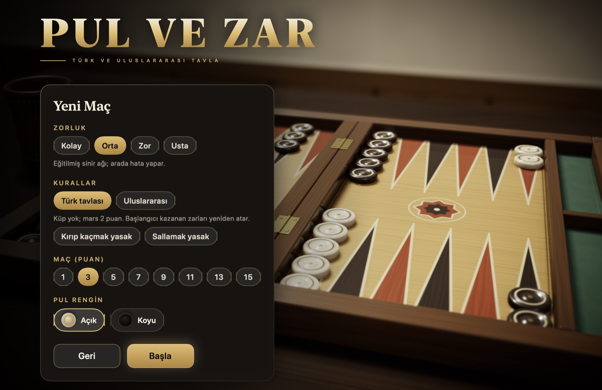
Şekil 5.1Yeni maç paneli: zorluk, kurallar, maç ya da oturum ve pul rengi.
Zorluk: "Kolay" sık hata yapar ve öğrenmek için idealdir. "Orta" eğitilmiş bir sinir ağıdır, arada hata yapar. "Zor" milyonlarca oyunla eğitilmiş sinir ağıdır. "Usta" buna ek olarak bütün zar olasılıklarını hesaplar.
Kurallar: "Türk tavlası" ya da "Uluslararası". Farkları Tablo 2.1'de. Türk tavlası seçiliyken altında iki geleneksel kural görünür: "Kırıp kaçmak yasak" ve "Sallamak yasak". İkisi de öntanımlı olarak kapalıdır. Seçtiğiniz kurallar maç boyunca değişmez.
Maç ya da oturum: "Maç (puan)" ile maçın kaç puana kadar oynanacağını seçersiniz: 1, 3, 5, 7, 9, 11, 13 ya da 15. Uluslararası kurallarda yanında "Oturum" sekmesi de vardır: oturumda maç uzunluğu yoktur, her oyunun puanı yazılır ve oturumu istediğiniz zaman bitirirsiniz. Oturumda "Jacoby kuralı", "Beaver", "Raccoon" ve "Otomatik vido" seçenekleri de görünür; ne oldukları 3.8'deki "Maç ve oturum kuralları" başlığında. Türk tavlasında oturum yoktur.
Pul rengin: "Açık" ya da "Koyu". Hangisini seçerseniz seçin, sizin pullarınız hep alttadır. Simgenin rengi Ayarlar'da seçtiğiniz pul stilinden gelir: "Kırmızı ve Siyah Lake"de açık pul kırmızıdır.
Süren bir maç varken yeni maç başlatırsanız uygulama önce sorar. Süren maç kaydedilir; "Maçlar" kartından ona dönebilirsiniz. Onay kartında başlayacak maçın özeti de yazar. ⌘N ile de aynı onay gelir, oyunlar arasında da.
5.2 Zar atmak ve pul oynamak
Sıra size geldiğinde zarlar kendiliğinden atılır: deri kupadan tahtanın sağ yarısına dökülür. Uluslararası kurallarda vido çekme hakkınız varsa uygulama bekler; tahtanın sağ yarısında "Zar At" düğmesi, altında da "Vido Çek" düğmesi belirir. Zarı düğmeye, zarlara ya da Boşluk tuşuna basarak atarsınız. Ayarlar'da "Zarı otomatik at" kapalıysa "Zar At" düğmesi her elinizde belirir.
Zarlar atıldıktan sonra oynayabileceğiniz pullar parlar. Bir pulu şu yollardan biriyle oynarsınız:
Tıklayarak: Önce pula tıklayın; gidebileceği haneler yeşil halkayla gösterilir. Sonra hedefe tıklayın. Rakibin açık pulunu kıracak hedef kırmızı bir nişanla işaretlenir.
Sürükleyerek: Pulu tutup hedefe bırakın.
Hızlı: Çift tıklama pulu büyük zarla, sağ tıklama küçük zarla oynar.
Şekil 5.3Hamle. 4-2 atıldı, 13'teki pul seçildi. 1 seçili pul, 2 4 ile gidebileceği boş hane (yeşil halka), 3 2 ile rakibin açık pulunu kırabileceği hane (kırmızı nişan).
Zarlardan hangisini önce oynayacağınızı değiştirmek için tahtadaki zarlara tıklayın. Son adımı oynayınca eliniz kendiliğinden biter ve sıra rakibe geçer; tek bir yasal hamleniz varsa uygulama onu sizin yerinize oynar. Eli kendiniz onaylamak ya da adımları geri almak isterseniz Ayarlar'da "Hamleyi otomatik onayla"yı kapatıp "Geri Al düğmesini göster"i açın: o zaman elinizi "Tamam" (Return) bitirir, o ana kadar "Geri Al" (⌘Z) oynadığınız adımları birer birer geri alır. Hiç hamleniz yoksa uygulama "Hamle yok — gele!" der ve sıra rakibe geçer. Köprüde pulunuz varken rakibin kalesi tamamen kapalıysa zar bile atılmaz: ekranda "Tatil" yazar ve sıra doğrudan geçer.
5.3 İpucu ve oyun kolaylıkları
"İpucu" düğmesi öntanımlı olarak gizlidir; Ayarlar'da "İpucu düğmesini göster"i açınca sağ altta belirir. Düğme (⌘I), Usta motorunun o el için önerdiği hamleyi tahtada işaretler; ilk adımınızı oynayınca işaret kalkar. Uluslararası kurallarda vido kararı için de öneri verir: zar atmadan önce "Öneri: vido çek" ya da "Öneri: vido çekme, zarı at", bilgisayarın vidosuna karşı "Öneri: al" ya da "Öneri: pas de". Kullandığınız ipuçları oyun sonu özetine ve istatistiklere işlenir.
Ayarlar'ın "Oynanış" bölümünde eli kolaylaştıran seçenekler var; "İpucu" ve "Geri Al" düğmeleri dışında hepsi öntanımlı olarak açıktır:
Zarı otomatik at: Sıra size gelince zar kendiliğinden atılır. Vido çekebileceğiniz ellerde bekler; vido kararı sizindir. Kapalıyken zarı her el "Zar At" düğmesiyle ya da Boşluk tuşuyla siz atarsınız.
Hamleyi otomatik onayla: El son adımla birlikte kendiliğinden biter. Kapalıyken elinizi "Tamam" düğmesiyle (Return) bitirirsiniz; "Geri Al" açıksa o ana kadar adımları geri alabilirsiniz.
Mecburi hamleyi otomatik oyna: Tek yasal hamle varsa uygulama onu oynar ve el biter.
Oynanabilir pulları göster ve Hedef halkalarını göster: Parlayan pulları ve yeşil halkaları açıp kapatır. Halkalar kapalıyken hedef halkası yalnızca klavyeyle seçtiğiniz hedefte görünür.
İpucu düğmesini göster ve Geri Al düğmesini göster: İkisi de öntanımlı olarak kapalıdır: öneri istenemez, oynanan adım geri alınamaz. Açtığınızda düğmeler sağ altta belirir, ⌘I ve ⌘Z kısayolları da çalışır. "Geri Al" kapalıyken öneri yalnızca ilk adımdan önce istenebilir.
5.4 Vido çekmek ve teklife yanıt vermek
Vido yalnızca uluslararası kurallarla oynanır. Sıra sizdeyken ve küp ortadaysa ya da sizdeyse, zar atmadan önce "Vido Çek" düğmesine basın (⌘D). Düğmede küpün çıkacağı değer yazar, örneğin "Vido Çek ×2". Bilgisayar yanıtını hemen verir: alırsa küp ona geçer ve oyun sürer, pas derse oyunu kazanırsınız.
Bilgisayar vido çektiğinde ekrana bir kart gelir:
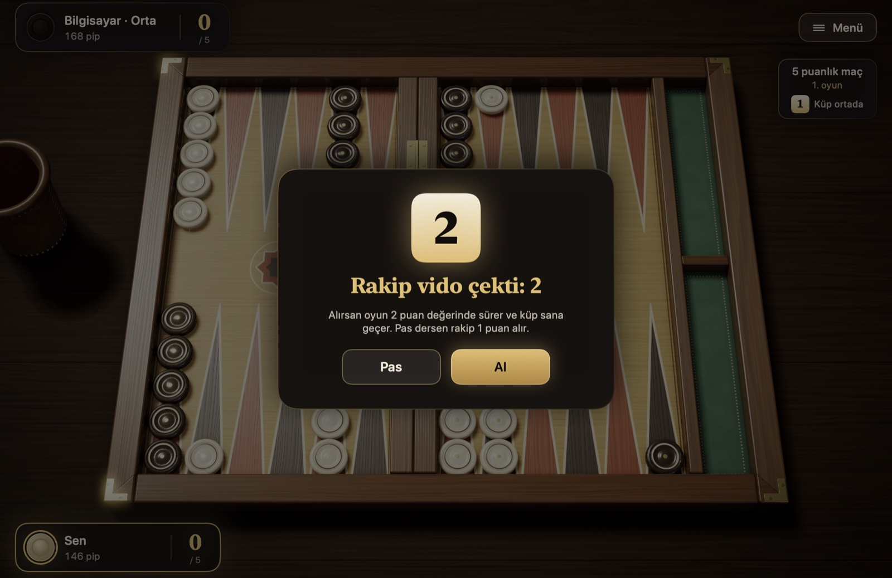
Şekil 5.4Vido teklif kartı.
Al: Oyun iki katı değerle sürer ve küp size geçer.
Pas: Oyunu bırakırsınız; rakip küpün teklif öncesindeki değeri kadar puan alır.
Beaver: Oturumda, "Beaver" açıksa görünür. Vidoyu alıp küpü hemen bir kat daha çıkarırsınız ve küp sizde kalır.
Siz vido çektiğinizde bilgisayar beaver derse benzer bir kart gelir: alırsınız, pas dersiniz ya da "Raccoon" açıksa küpü bir kat daha çıkarırsınız.
Küpün değeri ve kimde olduğu sağ üstteki maç bilgisinin altında yazar: "Küp ortada", "Küp sende" ya da "Küp rakipte". Maçta bir taraf hedefe 1 puan kala oynanan ilk oyunda küp kullanılmaz ve orada "Crawford oyunu" yazar.
5.5 Pes etmek ve oturumu bitirmek
Oyun sürerken Oyun menüsünden ya da duraklatma kartından "Pes Et"i seçin. Kartta kaç puanla pes edeceğinizi siz önerirsiniz: tek, mars ya da uluslararası kurallarda katmerli mars. Her seçeneğin altında rakibin kabul edip etmeyeceği önceden yazar. Rakip, konumun vadettiğinden düşük bir teklifi reddeder ve oyun sürer; maç skoru ve küp de hesaba katılır. Olamayacak düzeyler kartta görünmez: pul toplamaya başladıysanız mars ve katmerli mars artık olamaz, maçta rakibe maçı zaten kazandıran düzeyden büyüğü de sunulmaz.
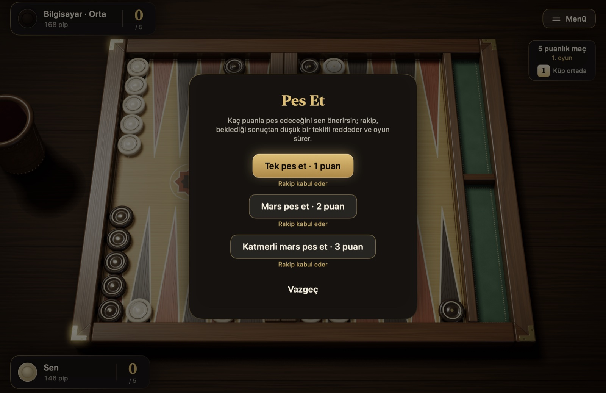
Şekil 5.5Pes kartı.
Bilgisayar da umutsuz bir yarışta kendisi pes edebilir.
Oturum yalnızca uluslararası kurallarla seçilir, Türk tavlasında yoktur. Oturumda maç uzunluğu yoktur; oturumu "Oturumu Bitir" ile siz bitirirsiniz. Oyunlar arasında, oyun sonu kartından bitirirseniz oturum hemen biter. Oyun sürerken bitirmek isterseniz süren oyunu pes edersiniz; rakip kabul ederse oyunun puanı yazılır ve oturum biter. Oturumun sonucu arşive ve istatistiklere girer.
5.6 Duraklatmak ve maça sonra devam etmek
Sağ üstteki "Menü" düğmesi ya da Esc oyunu duraklatır; yeniden Esc'e basınca oyun sürer. Duraklatma kartında "Devam Et", "Ayarlar", "Nasıl Oynanır", "Hamle geçmişi", "Maçlar", "Pes Et" ve "Maçtan Çık" bulunur.
Maçlar kendiliğinden kaydedilir. "Maçtan Çık" ile ana menüye dönebilir, uygulamayı kapatabilirsiniz; ana menüdeki "Devam Et" son maçı kaldığı yerden açar. Birden çok maçınız varsa "Maçlar" kartı süren maçları ve biten maçların arşivini listeler. Süren bir maça "Devam" ile döner, istemediğinizi "Sil" ile kaldırır, biten bir maçı "İzle" ile yeniden izlersiniz. Her satırda maçın kural seti ve açık isteğe bağlı kuralları da yazar.
5.7 Oyun sonu, analiz ve istatistikler
Oyun bitince bir kart sonucu gösterir: kazanılan puan, mars ya da katmerli marsın nedeni, maç skoru ve oyunun özeti. Özette süre, iki tarafın zar ortalaması, zar şansı ve kullandığınız ipuçları yazar. Maç bittiğinde karttaki "Yeni Maç" paneli açmadan son seçimlerinizle yeni maç başlatır; düğmenin altında başlayacak maçın özeti yazar.
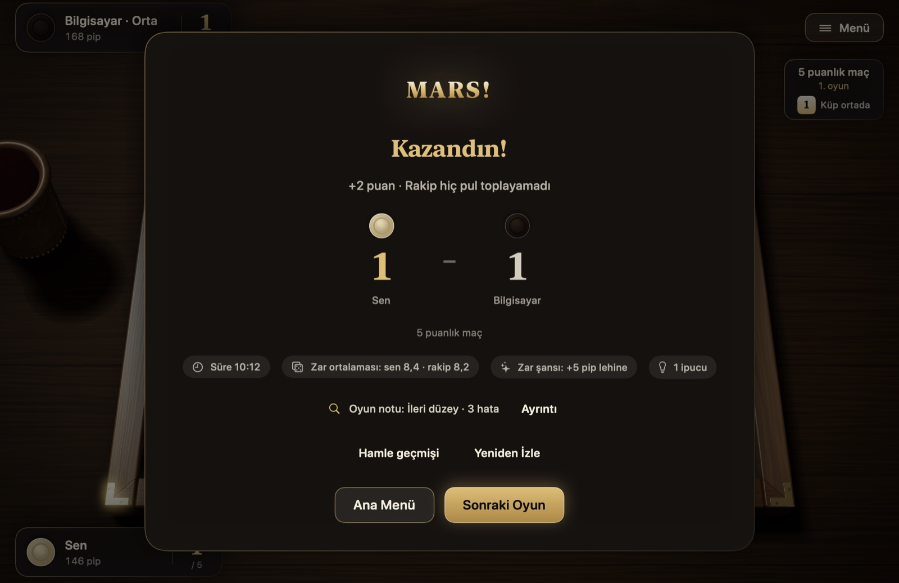
Şekil 5.6Oyun sonu kartı.
Kartın ortasındaki "Oyun notu", Usta motorunun oyundaki kararlarınızı incelemesinden çıkar; yanında yaklaşık PR değeri ve hata sayısı bulunur. "Ayrıntı" analiz kartını açar: en iyi seçenekten 0,02 puandan fazla kaybettiren kararlar, oynadığınızla daha iyisi yan yana listelenir. Vido kararları da buna dâhildir. Maç bittiğinde maçın notu da verilir.
Şekil 5.7Hamle analizi.
Oyun sonu kartının altındaki düğmelerle hamle geçmişini açar, oyunu yeniden izler, ana menüye döner ya da sonraki oyuna geçersiniz.
Ana menüdeki "İstatistikler" kartı kazanılan ve oynanan maç ve oyun sayılarını, kazanma oranını, yaptığınız ve yediğiniz marsları, en uzun galibiyet serinizi, düzeye göre sonuçları, zar dağılımını ve son maçları gösterir. Oynanan oturumlar ve oturumlardaki net puan ayrı tutulur. "İstatistikleri Sıfırla" ile baştan başlarsınız.
5.8 Hamle geçmişi, yeniden izleme ve dışa aktarma
"Hamle geçmişi" (⌘L) iki tarafın bütün ellerini, vido ve pes olaylarını listeler. Maçta birden çok oyun varsa üstteki düğmelerle oyun seçilir.
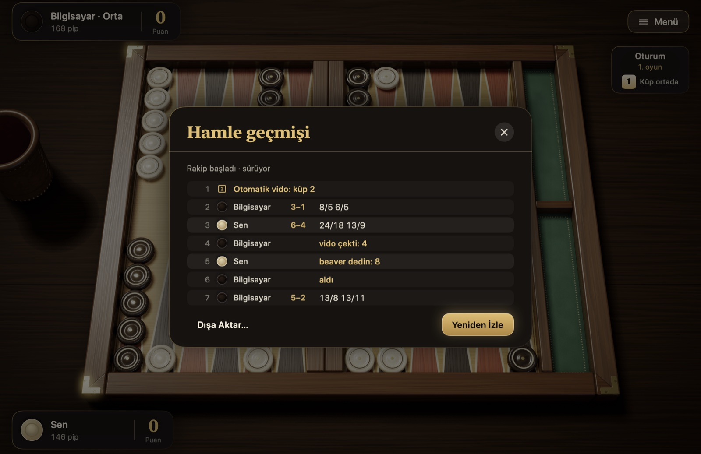
Şekil 5.8Hamle geçmişi. Bir oturumdan geçmiş: otomatik vido, zarlarıyla eller, vido, beaver ve alış satırları.
Biten bir oyunu "Yeniden İzle" ile gerçek canlandırmalarla baştan izleyebilirsiniz: ← ve → eller arasında gezer, Boşluk oynatır ve durdurur. "Dışa Aktar…" maç kaydını üç biçimde yazar: okunabilir metin (.txt), Jellyfish ve XG'nin okuduğu .mat ve GNU Backgammon'un .sgf biçimi. Böylece maçınızı bu programlarla ayrıca inceleyebilirsiniz.
5.9 Ayarlar
Ayarlar'a ana menüden ya da duraklatma kartından ulaşırsınız. Değişiklikler hemen uygulanır.
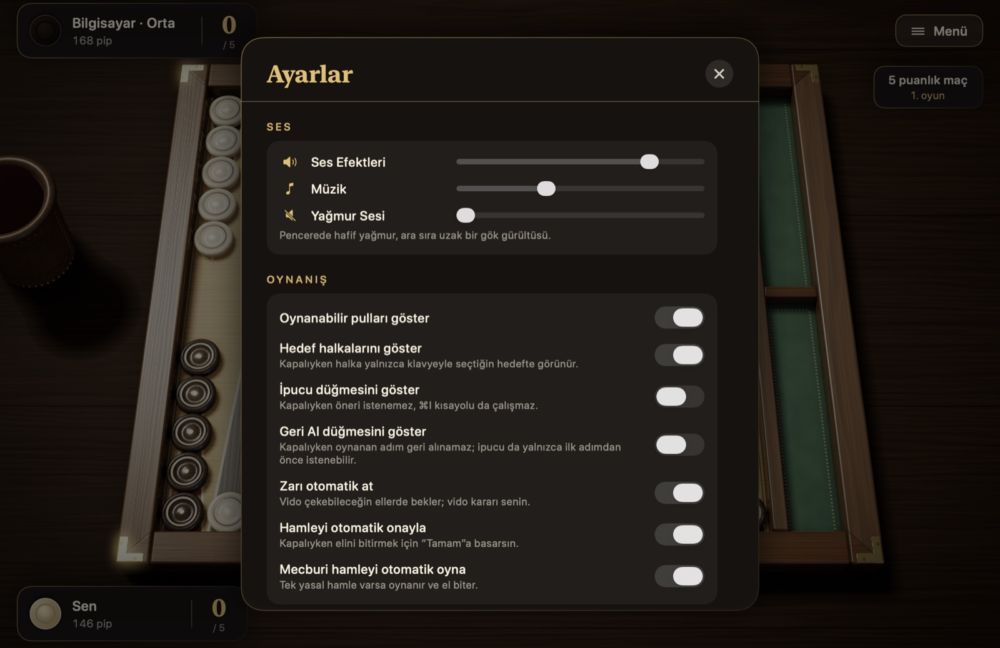
Şekil 5.9Ayarlar.
Ses: Ses efektleri, müzik ve pencerede yağmur sesi için ayrı düzeyler.
Oynanış: Oynanabilir pullar, hedef halkaları, İpucu ve Geri Al düğmeleri, otomatik zar, otomatik onay ve mecburi hamle; ayrıntısı 5.3'te. Kurallar Ayarlar'da değildir: Türk tavlasının iki geleneksel kuralı yeni maç panelinde seçilir.
Hız: Canlandırma hızı ve rakibin düşünme süresi. "Zar kupası" kapalıyken zarlar kupasız atılır ve atış daha hızlı olur.
Görünüm: Tahta ("Klasik Ceviz", "Sedef Kakma", "Akçaağaç"), pullar ("Şimşir ve Abanoz", "Mermer ve Oniks", "Kırmızı ve Siyah Lake"), zarlar ("Fildişi", "Abanoz", "Kehribar") ve çuha ("Yeşil", "Bordo", "Lacivert"). Pul ve zar stili sesi de değiştirir; ekrandaki pul simgeleri de seçtiğiniz pul stilinin renklerini alır. "Kale solda" tahtayı aynalar, pullar sola doğru toplanır. Yazı boyutu "Normal", "Büyük" ya da "Çok büyük" olabilir.
Kamera: Sinematik kamera (maç başında yaklaşma, maç sonunda alçalan dönüş), yakınlık ve bakış eğimi.
Dil: Türkçe, İngilizce, Fransızca, Almanca, İspanyolca, Portekizce ve İtalyanca. "Sistem" seçiliyken sistemin dili kullanılır.
5.10 Klavye kısayolları
Tahtadaki bütün hamleler fare kullanmadan klavyeyle oynanabilir.
Tablo 5.1 Klavye kısayolları
Tuş
Ne yapar
Boşluk
Bekleyen zarı atar; otomatik onay kapalıyken eli onaylar
Return
Klavyeyle seçilen hedefe pulu oynatır; otomatik onay kapalıyken eli onaylar
Tab, ⇧Tab
Oynanabilir pullar arasında gezer
Ok tuşları
Seçili pulun hedefleri arasında gezer
Esc
Duraklatır, yeniden basınca oyun sürer; açık bir kartı kapatır
⌘Z
Son adımı geri alır; "Geri Al" düğmesi açıkken çalışır
⌘I
İpucu; "İpucu" düğmesi açıkken çalışır
⌘D
Vido çeker
⌘L
Hamle geçmişini açar
⌘N
Yeni maç; maç sürerken, oyunlar arasında da, önce sorar
⌘?
"Nasıl Oynanır" kartını açar
← →
Yeniden izlemede önceki ve sonraki el
5.11 Erişilebilirlik
Ekran okuyucu: Tahta VoiceOver ile oynanabilir. Haneler, köprü, toplanan pullar ve zarlar ayrı öğelerdir; her birinde kimin kaç pulu olduğu, oynanabilir, seçili ya da hedef olup olmadığı okunur. Zarlarınız, rakibin hamleleri ve kırılan pullar sesli duyurulur.
Hareketi azaltma: macOS'ta "Hareketi azalt" açıksa kamera canlandırmaları, menü salınımı ve paralaks, zar kupası, pul sekmeleri ve altın yağmuru kapanır.
Karşıtlık: macOS'taki "Karşıtlığı artır" ayarı açıksa arayüzün yazıları ve çizgileri daha belirgin çizilir.
Yazı boyutu: Ayarlar'da yazıları "Büyük" ya da "Çok büyük" yapabilirsiniz; kartlar ve göstergeler buna göre büyür.
Klavye: Tahtadaki bütün hamleler klavyeyle oynanabilir; tuşlar Tablo 5.1'de.
6. Bölüm
Başvuru
Bu bölüm başvuru içindir: sık sorulan sorular, terimler sözlüğü ve dizin. Terimler tablosunun "Bakınız" sütunu, her terimin anlatıldığı başlıklara götürür.
6.1 Sık sorulan sorular
Zarım kötü geldi, pas geçebilir miyim? Hayır. Zarların izin verdiği bir hamle varsa yapmak zorundasınız. Pas ancak hiçbir zar oynanamıyorsa kendiliğinden olur.
Rakibin pulunu oynayabilir miyim? Hayır. Her oyuncu yalnızca kendi pullarını oynar.
Bir pulu kırdıktan sonra aynı pulla devam edebilir miyim? Uluslararası kuralda evet: kırmak pulun yolculuğunu bitirmez, kalan zarla o pulu ilerletebilirsiniz. Yaygın Türk tavlasında ise kendi kalenizde kırıp kaçmak yasaktır. Pul ve Zar'da Türk kurallarıyla oynarken bu yasak, yeni maçta "Kırıp kaçmak yasak" seçildiyse uygulanır; öntanımlı olarak kapalıdır.
Bir haneye en fazla kaç pul konabilir? Sınır yoktur. Kendi hanenize istediğiniz kadar pul yığabilirsiniz.
Kırık pulum varken toplamaya başlayabilir miyim? Hayır. Toplama için bütün pullarınızın kalenizde olması gerekir; köprüdeki pul kalenin dışında sayılır.
İki zarı toplayıp tek pulla oynamak zorunda mıyım? Hayır. İki zarı iki ayrı pula da verebilirsiniz. Tek pulla oynarsanız ara durağın açık olması gerekir.
Oyun berabere bitebilir mi? Hayır. Oyuncular sırayla oynadığı için biri mutlaka önce bitirir.
Kendi kalemdeki bir kapıyı bozmak zorunda kaldım, bu hata mı? Her zaman değil. Bazen zar başka seçenek bırakmaz; mecburi hamle kuralı her şeyin önündedir.
Pul ve Zar'da yanlışlıkla bir pulu oynadım, ne yapmalıyım? Öntanımlı ayarlarda oynanan adım geri alınmaz. Geri alabilmek için Ayarlar'da "Geri Al düğmesini göster"i açın; o sıradaki adımlarınızı el bitene kadar geri alabilirsiniz. "Hamleyi otomatik onayla" açıkken el son adımla birlikte biter; onu da kapatırsanız siz "Tamam"a basana dek geri alabilirsiniz.
Pip sayım neden aniden arttı? Pulunuz kırılmıştır. Köprüye giden pul yolun başına döndüğü için pip sayınız o pulun kaybettiği mesafe kadar artar.
Buraya kadar geldiyseniz tavlanın bütün kurallarını, temel planları ve Pul ve Zar'ın her köşesini tanıdınız demektir. Gerisi tahtada öğrenilir. İlk maçlarınızı "Kolay" düzeyde oynayın; kaybettiğiniz oyunların analizine bir göz atıp hangi kararların puan kaybettirdiğini görün, sonra düzeyi yükseltin. Zar bazen size, bazen rakibe güler; uzun vadede farkı seçimleriniz belirler.
Tavla beş bin yıldır insanları bir masanın iki yanına oturtuyor. Pul ve Zar'ın bu geleneğe küçük bir katkı olmasını ve size keyifli saatler getirmesini diliyorum. Görüşleriniz ve önerileriniz uygulamayı geliştirmeye yardımcı olur.